Unofficial study solution; not an official GTU answer key. Answers have not been independently verified. English text reflows; source equations, diagrams and Gujarati retain their original appearance. Use Enlarge image to inspect them.
આ બિનસત્તાવાર અભ્યાસ ઉકેલ છે, સત્તાવાર GTU જવાબવહી નથી. PDF માંથી ગુજરાતી લખાણ સાચું નીકળતું નથી, તેથી દરેક જવાબ મૂળ ચિત્રરૂપે જાળવ્યો છે. વાંચવા માટે ચિત્ર મોટું કરો. મૂળ પ્રશ્ન અને પરીક્ષાના વિકલ્પોની સૂચનાઓ અનુસરો.
What this file is: a complete solved paper. All five questions and every OR alternative are answered — 28 answer parts. The printed English question is repeated above each answer in both language modes; only the answer changes language.
Exam instructions as printed: attempt all questions · make suitable assumptions wherever necessary · figures to the right indicate full marks · simple and non-programmable scientific calculators are permitted · the English version is authentic.
Assumptions used in the answers: standard handbook values are used for properties (for example E = 70 GPa for glass, NA = 6.022 × 1023 mol−1); industrial compositions are typical commercial ranges, not one fixed recipe; diagrams are labelled illustrations drawn for this answer, not tracings of the paper.
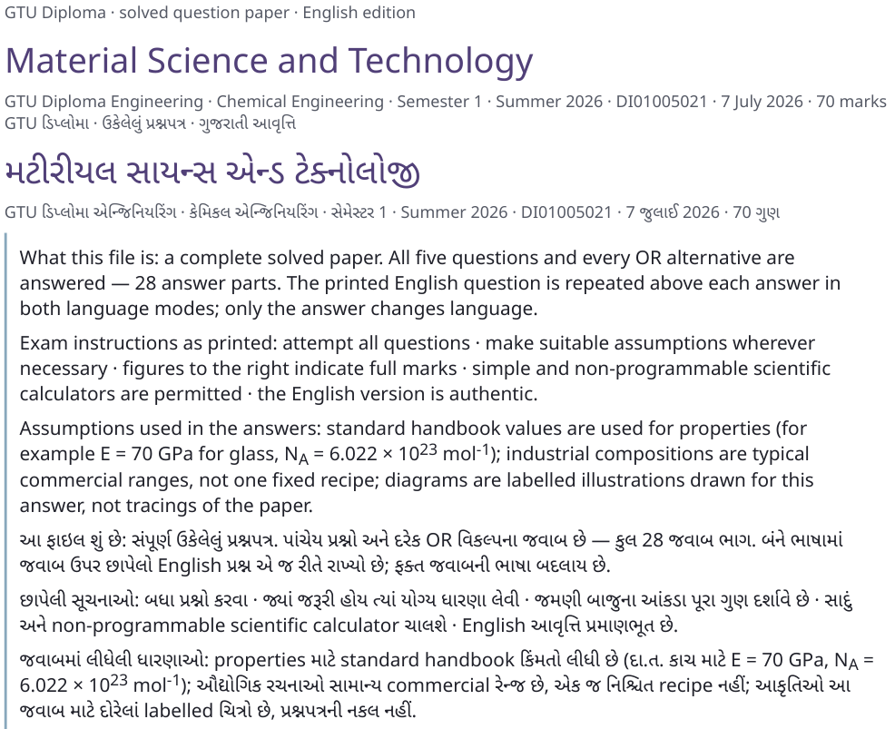
Question 1
Q1 · Scope of material science, factors and crystalline solids
Q.1 (a) · Explain Scope of material science. · 3 marks
Definition
Material science is the study of the structure, properties, processing and performance of materials — metals, ceramics, polymers and composites — and of how these four depend on one another. Its working rule is simple: structure decides properties, properties decide performance, and processing decides structure.
Scope
• Selection of material: choosing the cheapest material that survives the temperature, pressure, corrosion and load of a job — for example, choosing rubber-lined steel instead of stainless steel for dilute HCl storage.
• Development of new materials: alloys, superalloys, engineering plastics, composites and cermets for higher temperature and lower weight.
• Processing control: casting, rolling, forging, welding and heat treatment, where the same metal is made soft or hard by changing its structure.
• Testing and failure analysis: finding out why a part cracked or corroded, and then changing the material, the design or the process.
Example
A chemical plant needs a tank for 20 % nitric acid at 60 °C. Mild steel corrodes in a month, ordinary stainless steel 304 gives a few years, and stabilised 316L gives long service. Material science tells the engineer why — the molybdenum in 316L builds a passive film that resists chloride and oxidising acid — and therefore which one to buy for this duty.
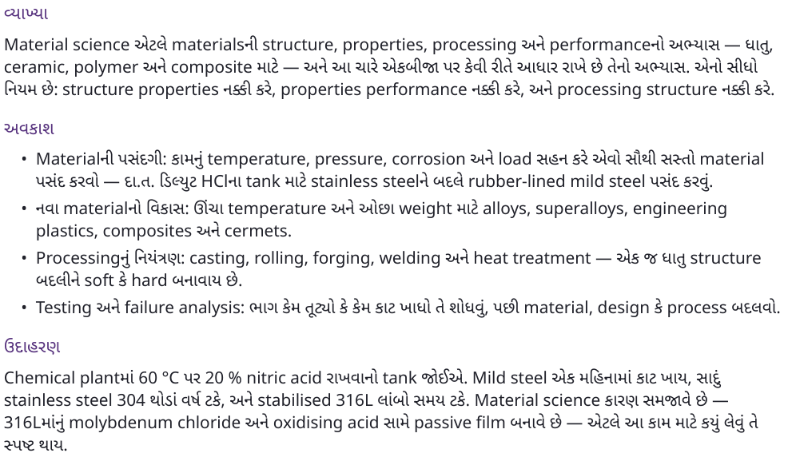
Q.1 (b) · Explain factor affecting of material properties. · 4 marks
Definition
Material properties are the measurable behaviour of a material under load, heat, electricity or a corrosive environment. They are not fixed by the name of the metal — the same steel can be soft or brittle — because they depend on the factors below.
Factors and how each one acts
Factor Effect on properties Example
Composition alloying elements change strength, hardness, corrosion resistance
0.8 % C steel is hard and brittle, 0.15 % C mild steel is soft and weldable
metallic bonding gives ductility, ionic and covalent bonding give hardness and brittleness
copper bends, glass shatters
Bonding and crystal structure
![Q.1 (b): preserved source formula, table or diagram, page 3. Extracted text context (formula notation may be incomplete): Grain size small grains raise yield strength and toughness (Hall–Petch relation) fine-grained steel plate is tougher than coarse-grained Defects vacancies and dislocations allow slip; too many make the metal brittle cold-worked wire is stronger but less ductile Temperature strength falls and ductility rises on heating; metals turn brittle below the transition temperature steel at 600 °C creeps under steady load quenching, annealing and cold work set the final structure quenched and tempered gear is tough, annealed one is soft Processing and heat treatment Impurities sulphur and phosphorus make steel hot- and cold-short 0.05 % S in steel causes cracking during welding Environment moisture, chlorides and acids cause corrosion and hydrogen embrittlement stainless steel pits in warm chloride brine](summer-2026.assets/0002.webp)
Limitation
One factor can never be improved alone. Making a metal stronger by cold work or by adding carbon also makes it less ductile and harder to weld, so the engineer has to choose a balance for the actual duty and confirm it by a test — not by the data sheet alone.
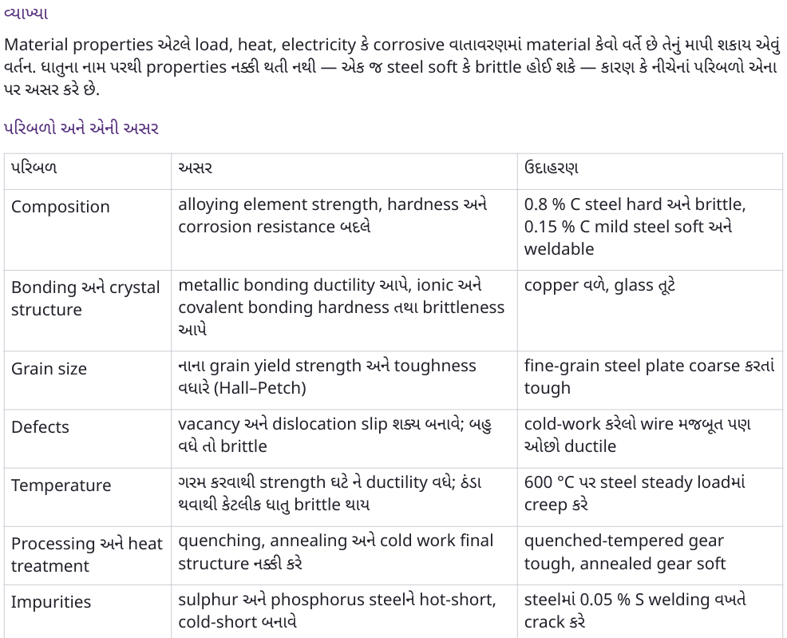
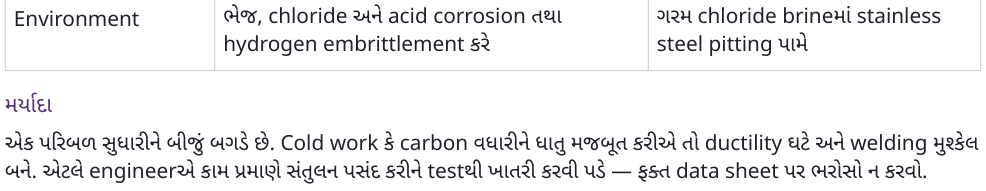
Q.1 (c) · Classified crystalline solid · 7 marks
Definition and importance
A crystalline solid is a solid in which the atoms, ions or molecules are arranged in a regular, repeating three-dimensional pattern called a lattice. Because the pattern is regular, a crystal has long-range order, a sharp melting point, flat cleavage planes and a characteristic X-ray diffraction pattern.
Classification matters in engineering because the type of particle and the type of bond decide hardness, melting point, electrical and thermal behaviour, solubility and even the way the material can be shaped. The same classification explains why diamond cuts steel, why salt dissolves in water, and why a metal conducts while a ceramic does not.
Classification
Class Particles held by Typical properties Examples
Ionic electrostatic force between cations and anions
hard and brittle, high melting point, poor conductor as solid, conducts when molten or dissolved, soluble in water
NaCl, CaF2, MgO, KBr
shared electron pairs in a continuous 3-D network
very hard, very high melting point, non- conducting, insoluble
diamond, silicon carbide, quartz (SiO2)
Covalent (network)
Molecular weak van der Waals force between molecules
soft, low melting point, non-conducting, volatile
ice, solid CO2, iodine, sulphur
Metallic delocalised electron cloud (metallic bond)
ductile and malleable, good conductor of heat and electricity, moderate to high melting point, lustrous
Cu, Fe, Al, W, Ag
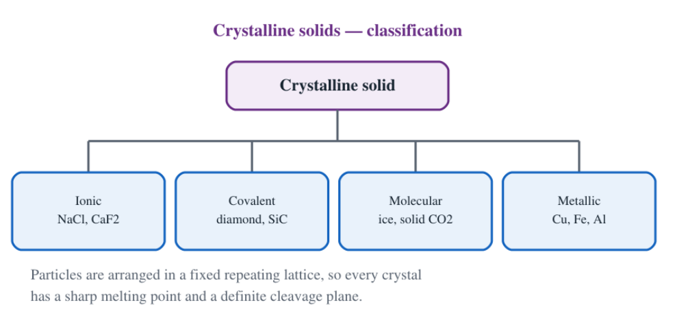
Fig. 1.1 · Four classes of crystalline solid with one example of each.
Working — how the classification is applied
1. Step 1 — Find the particles that occupy the lattice points — ions, atoms or molecules.
2. Step 2 — Find the force that holds them together: ionic, covalent, van der Waals or metallic. This single point decides most of the properties.
3. Step 3 — From the force, predict melting point, hardness, conduction and solubility.
4. Step 4 — Check the prediction with the given data — melting point, conductivity in solid and in melt, and solubility — and name the class.
Worked example
A white solid X melts at 801 °C, is hard and brittle, does not conduct electricity when solid, conducts well when molten, and dissolves in water. Identify the class and the solid.
Given: melting point 801 °C · hard and brittle · non-conductor as solid · conductor as melt · water soluble
Step 1 — high melting point and brittleness suggest a strong ionic or covalent lattice.
Step 2 — conduction in the melt but not in the solid is the signature of free ions: ionic.
Step 3 — solubility in water confirms the ionic class, since a network covalent solid is insoluble.
X is an ionic crystalline solid; the data match sodium chloride, NaCl.
Sanity check: the accepted melting point of NaCl is 801 °C, and molten NaCl is used as an electrolyte — both agree.
Limitations and applications
• A few solids lie between the classes — graphite conducts like a metal but is covalent, so it is called a covalent solid with delocalised electrons.
• Real crystals are never perfect: vacancies and dislocations change the measured strength from the ideal value.
• The classification is still the first step in material selection — ionic and covalent ceramics for refractory and dielectric duty, metals for conduction and forming, molecular solids for low- temperature and pharmaceutical use.
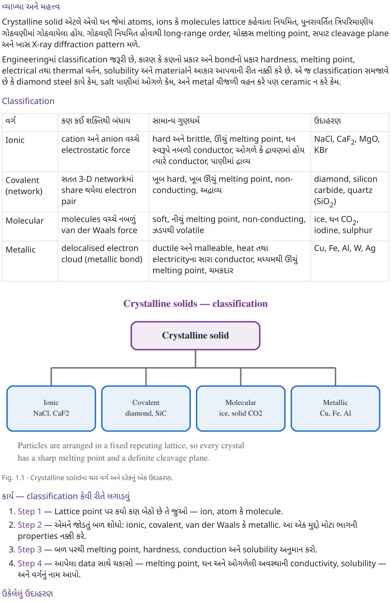
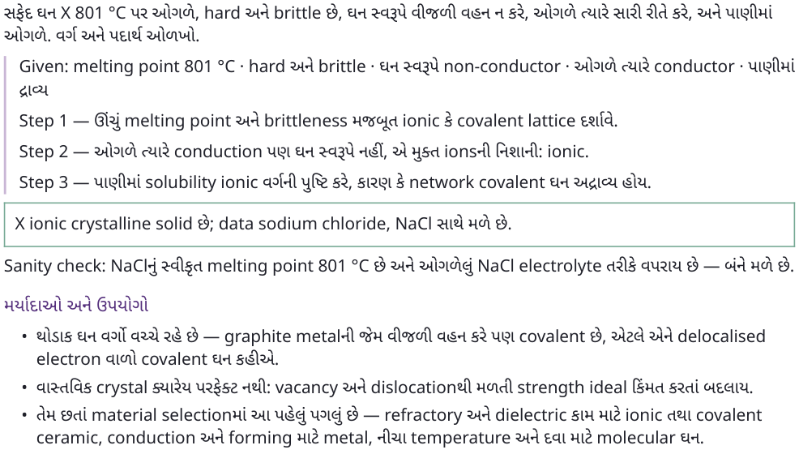
Q.1 (c) · Explain general characteristic of solid state. · OR · 7 marks
Definition
The solid state is that state of matter in which the constituent particles are held so close together that they can only vibrate about fixed mean positions. A solid therefore has a definite shape and a definite volume of its own, and it does not flow to fill the container.
General characteristics
![Q.1 (c) OR: preserved source formula, table or diagram, page 7. Extracted text context (formula notation may be incomplete): Characteristic What is observed Reason from structure a solid keeps its own shape; a liquid takes the shape of the vessel particles are locked in position, only vibration is possible Definite shape and volume a solid resists shear and can carry load strong interparticle forces hold the lattice together Rigidity and mechanical strength High density solids are denser than their liquids in most cases particles are closely packed; only a small free volume a solid cannot be squeezed like a gas interparticle gap is already close to the particle size Very low compressibility Definite melting point crystalline solids melt sharply; amorphous solids soften over a range the whole lattice breaks at one temperature Diffusion is very slow two solids in contact mix only over years movement needs a vacancy and a lot of energy Anisotropy refractive index, conductivity and strength differ along directions the lattice spacing differs from plane to plane a crystal splits along flat planes and gives sharp diffraction spots regular planes of atoms act as a grating for X-rays Cleavage and X-ray diffraction](summer-2026.assets/0008.webp)
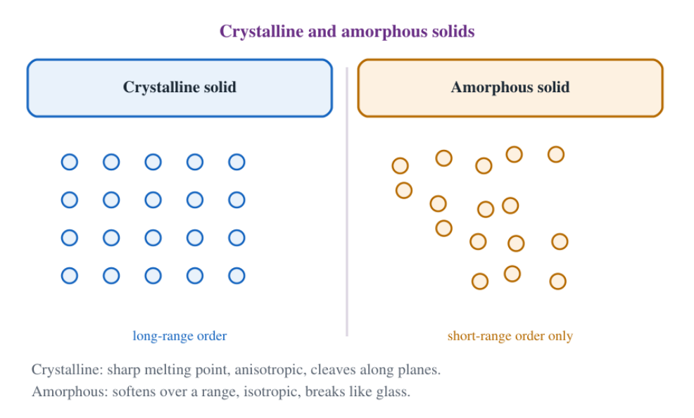
Fig. 1.2 · Ordered crystalline lattice compared with the random amorphous arrangement.
Working — how the characteristics are explained
1. Step 1 — Start from the interparticle force: it is strong and short-range in a solid, so each particle is trapped in a potential well.
2. Step 2 — Trapped particles can only vibrate with small amplitude, so the solid keeps its shape and resists shear.
3. Step 3 — The amplitude of vibration grows with temperature; when it exceeds a certain fraction of the interparticle distance the lattice collapses — that is melting.
4. Step 4 — Because the lattice is regular, the same solid behaves differently in different directions (anisotropy) and gives a sharp diffraction pattern.
Worked example
Ordinary salt has a face-centred cubic lattice with lattice constant a = 564 pm, and each unit cell holds Z = 4 NaCl formula units. Check the density from the lattice, taking M = 58.5 g/mol and NA = 6.022 × 1023 mol−1.
Given: a = 564 pm = 5.64 × 10−8 cm · Z = 4 · M = 58.5 g/mol · NA = 6.022 × 1023 mol−1
Volume of one cell: a3 = (5.64 × 10−8)3 = 1.794 × 10−22 cm3
Numerator = 234 g/mol; denominator = 108.0 cm3/mol
ρ = 2.17 g/cm3 for NaCl
Sanity check: the measured density of rock salt is 2.16 g/cm3, so the lattice model of the solid state
is correct to about 0.5 %.
Limitations and applications
• The eight characteristics describe an ideal crystal; real solids contain vacancies, dislocations and grain boundaries, so measured strength is 10 to 100 times below the theoretical value.
• Anisotropy is strong in single crystals but averages out in a polycrystalline metal, so a cast or rolled part behaves almost the same in all directions.
• The solid-state picture is the basis of alloy design, semiconductor doping, ceramic refractories and the heat treatment of steel.
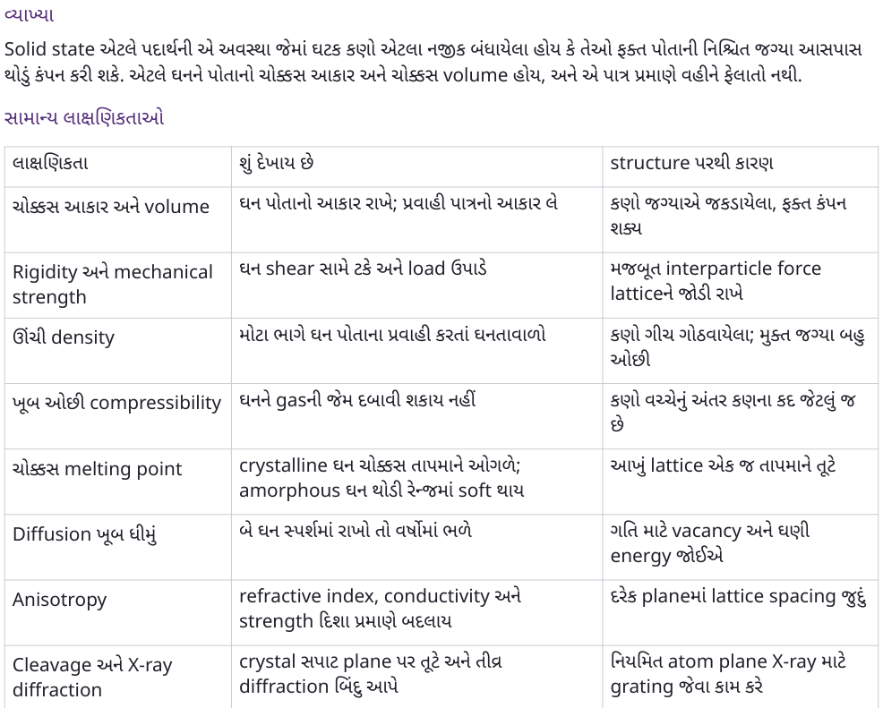
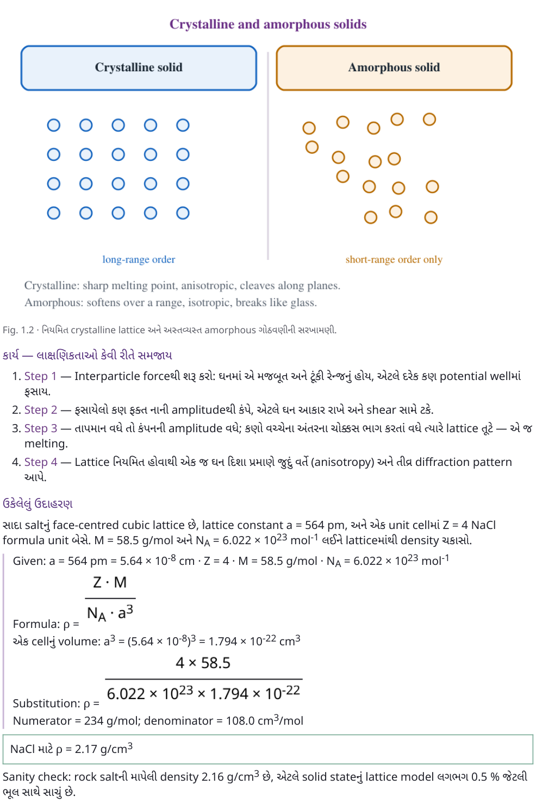
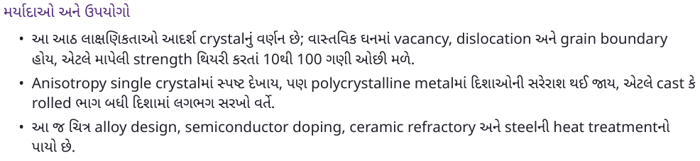
Question 2
Q2 · Crystal solids, brass, lead and zinc, lattices and alloys
Q.2 (a) · Give Classification of Crystalline Solid. · 3 marks
A crystalline solid has its particles in a regular repeating lattice. Crystalline solids are classified into four types by the particle that sits on the lattice points and by the bond that holds it there.
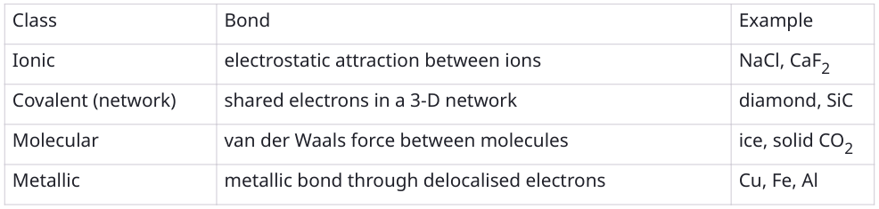
Example of use: NaCl is ionic and conducts only when molten, so it is used as an electrolyte in the manufacture of caustic soda, never as a solid conductor.
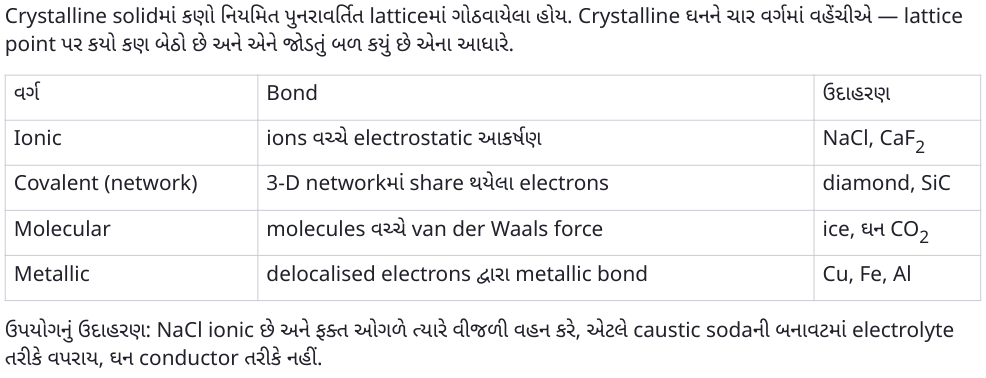
Q.2 (b) · Give the properties and uses of Brass. · 4 marks
What brass is
Brass is a copper–zinc alloy, normally with 60–70 % Cu and 30–40 % Zn (the 70/30 grade is called
cartridge brass, the 60/40 grade is Muntz metal). Zinc makes it stronger and cheaper than pure copper and keeps most of copper's corrosion resistance.
Properties
![Q.2 (b): preserved source formula, table or diagram, page 12. Extracted text context (formula notation may be incomplete): Property Value / behaviour Why it matters Colour yellow to golden decorative and plumbing fittings Density 8.4–8.7 g/cm3 lighter than steel, heavier than aluminium Melting range about 900–940 °C easy to melt and cast Tensile strength 300–500 MPa (cold worked) strong enough for fittings and valves Ductility excellent when cold; can be rolled to foil deep drawing, bending, spinning Machinability best of all copper alloys (free-cutting brass) screws, nuts, instrument parts Electrical conductivity about 28 % of pure copper springs and current-carrying clips only Corrosion good in fresh water and dry air; fails in ammonia and sea water not for marine or ammonia duty](summer-2026.assets/0017.webp)
Uses
• Plumbing: taps, valves, couplings and water fittings (also because it resists bacteria).
• Electrical: plugs, socket pins, terminals, switch parts (easy to machine and solder).
• Marine and general: condenser tubes in the 70/30 + 1 % Sn grade (admiralty brass), propeller shafts, heat-exchanger tubes.
• Domestic and decorative: door handles, locks, musical instruments, brassware, cartridge cases and coins.
Limitation
Dezincification is the weakness of brass. In warm, slightly acidic or chloride water the zinc is leached out and a weak, porous copper sponge is left, which then leaks. Adding about 1 % tin or arsenic and avoiding stagnant warm water controls the problem — this is why the admiralty grade is specified for condenser tubes.
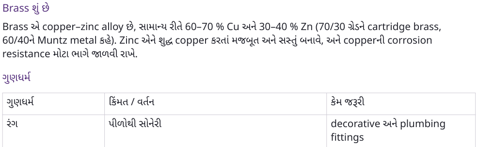
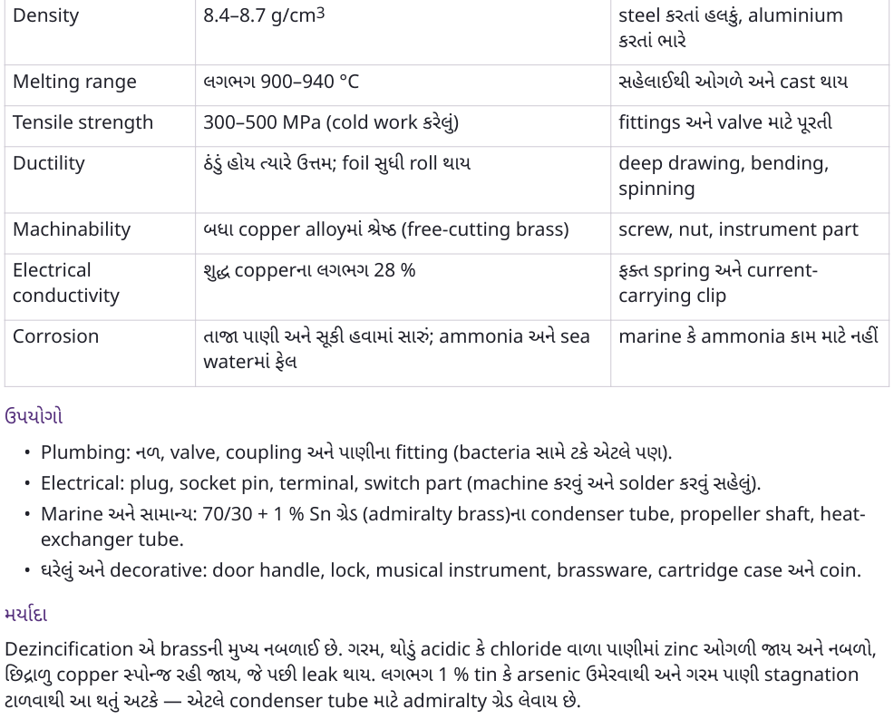
Q.2 (c) · List out the properties of lead and zinc. · 7 marks
Why these two metals are studied together
Lead (Pb) and zinc (Zn) are both non-ferrous, low-melting metals, but they behave almost oppositely: lead is soft, dense and highly corrosion resistant, while zinc is harder, lighter and sacrifices itself to protect steel. Both are used as protection for other metals rather than as structural metals.
Properties of lead
Property Value / behaviour Consequence
Z = 82, 11.34 g/cm3 very heavy, used for shielding
Atomic number and density
Melting point 327 °C easy to melt and cast, but creeps in hot service
Hardness very soft, 1.5 on the Mohs scale, Vickers 4–5 scratches with a fingernail, cannot carry load
Tensile strength only 15–20 MPa, very low never used as a structural member
![Q.2 (c): preserved source formula, table or diagram, page 14. Extracted text context (formula notation may be incomplete): Ductility and malleability excellent; rolled to sheet and extruded to pipe lead sheet, lead pipe, cable sheathing Corrosion resistance excellent against sulphuric acid, sulphates and fresh water because an insoluble PbSO4 film forms chamber plant, roof flashing, acid tanks Electrical and thermal conductivity low, about 8 % of copper not a conductor; used for shielding instead Toxicity cumulative poison; damages nerves and blood banned in drinking-water pipe and in paint Radiation shielding high atomic number and density absorb gamma rays X-ray and nuclear shielding](summer-2026.assets/0020.webp)
Properties of zinc
![Q.2 (c): preserved source formula, table or diagram, page 14. Extracted text context (formula notation may be incomplete): Property Value / behaviour Consequence Z = 30, 7.14 g/cm3 lighter than steel Atomic number and density Melting point 420 °C low, so it can be hot-dip coated on steel at 450 °C Hardness 2.5 on the Mohs scale harder than lead and tin, softer than copper Tensile strength about 110–150 MPa (rolled) usable for sheet and die casting Ductility good above 100 °C; brittle when cold and in very pure form galvanising, rolled zinc sheet, dry cells Corrosion behaviour amphoteric — dissolves in both acids and alkalis; forms a protective basic zinc carbonate film in air zinc-coated steel resists rural and industrial air, not strong acids Electrochemical position more negative than iron (E° = −0.76 V) sacrificial anode; protects steel even where the coating is scratched Electrical conductivity about 28 % of copper dry cells, battery cans, roofing Toxicity essential trace element but zinc fume causes metal-fume fever welding must be done with extraction](summer-2026.assets/0021.webp)
Lead and zinc compared
Point Lead (Pb) Zinc (Zn)
Density 11.34 g/cm3, very heavy 7.14 g/cm3
Melting point 327 °C 420 °C
Hardness very soft moderately soft, harder than lead
Strength 15–20 MPa 110–150 MPa
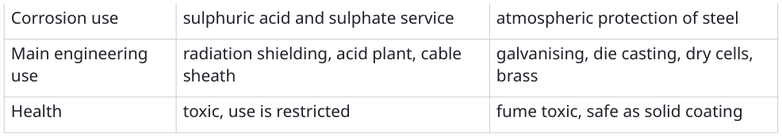
Working — how the properties are used in selection
1. Step 1 — Read the duty: is the metal carrying load, carrying current, or protecting something else?
2. Step 2 — Lead is chosen where density and acid resistance matter and load does not — shielding, acid-proof lining, cable sheath.
3. Step 3 — Zinc is chosen where the cheapest corrosion protection of steel is needed — hot-dip galvanising, because zinc is anodic to iron and protects the bare edges.
4. Step 4 — Check the temperature: both metals creep and lose strength above about 100 °C, so neither is used for pressure parts at high temperature.
Worked example — coating life of a galvanised sheet
A galvanised roof sheet carries a zinc coating of 275 g/m2 (that is 0.038 mm thick on each side together). The local corrosion rate of zinc is 5 g/m2 per year. Estimate the coating life.
Given: coating mass = 275 g/m2 · corrosion rate = 5 g/m2 per year
Estimated coating life ≈ 55 years
Sanity check: a rural site with 2–4 g/m2 per year gives 70–130 years, and a coastal site with 10 g/m2
per year gives about 27 years — matching the 20+ years normally quoted for galvanised roofing.
Limitations and applications
• Neither metal is a structural material: both creep, both have low strength, and both are attacked by strong acids (lead by nitric acid, zinc by hydrochloric acid).
• Lead is a cumulative poison and is now banned in drinking-water pipe, paint and petrol; zinc fume during welding gives metal-fume fever.
• Applications: lead in lead-acid battery plates, radiation shielding, sulphuric acid plant lining and cable sheathing; zinc in galvanising, die-cast carburettor and housing parts, dry-cell cans, rolled roofing and as the alloying element of brass and bronze.
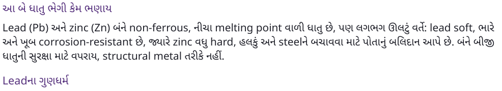
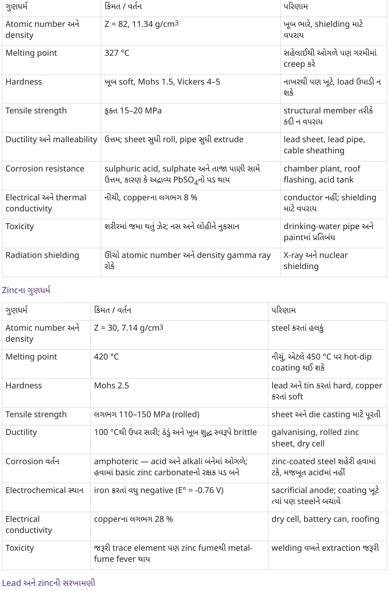
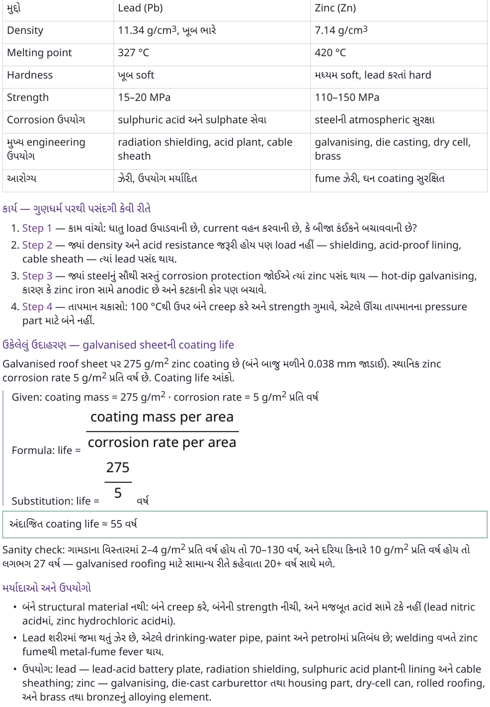
Q.2 (a) · Define crystal lattice and unit cell · OR · 3 marks
Definitions
Crystal lattice is the regular, infinite three-dimensional arrangement of points in space such that every point has exactly the same surroundings. Each point represents the position of one atom, ion or molecule of the crystal.
Unit cell is the smallest repeating portion of the lattice which, when translated in the three directions by the lattice constants a, b and c, builds the whole crystal.
Key points
• The lattice is a set of points; the unit cell is a volume with edges a, b, c and angles α, β, γ.
• There are 14 Bravais lattices and 7 crystal systems, from which every crystal is built.
• The number of atoms per unit cell is 1 for simple cubic, 2 for BCC and 4 for FCC, because corner atoms are shared by 8 cells.
• Lattice constant is measured in picometres by X-ray diffraction; it fixes the density of the crystal.
Example: sodium chloride has a face-centred cubic lattice with a = 564 pm and 4 formula units per unit cell; copper is also FCC with a = 361 pm but has 4 atoms per cell.
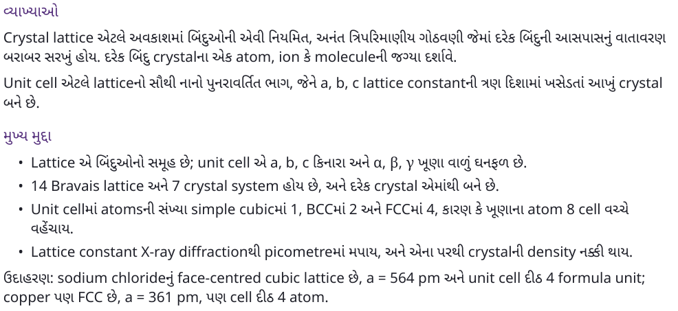
ORQ.2 (b) · Write properties and uses of stainless steel. · 4 marks
What it is
Stainless steel is an iron–chromium alloy containing at least 10.5 % chromium, with nickel, molybdenum, titanium and carbon added for particular duties. The chromium forms a thin, self- healing Cr2O3 passive film, about 2–3 nm thick, which is the whole reason the steel does not rust.
Properties
Property Value / behaviour Consequence
Corrosion resistance
excellent in oxidising media, water and food acids; pitting in warm chloride
chemical and dairy plant, no paint needed
![Q.2 (b) OR: preserved source formula, table or diagram, page 19. Extracted text context (formula notation may be incomplete): Strength tensile 500–700 MPa; work-hardens rapidly thin sheet can do the work of a thicker mild-steel sheet Ductility and formability good in the annealed 304 grade deep drawing of sinks and vessels Heat resistance 316 and 310 grades scale only above 800– 900 °C furnace parts, heat-exchanger tubes Cryogenic toughness austenitic grades stay tough down to −196 °C LNG and liquid-oxygen service Hygiene smooth, non-porous, easy to sterilise hospital, dairy and brewery equipment Cost and machining 4–8 times the price of mild steel; gummy to machine and it work-hardens used as thin cladding or only where needed Welding weldable, but carbide precipitation in 304 causes weld decay use low-carbon 304L or stabilised 321](summer-2026.assets/0029.webp)
Uses
• Chemical and petrochemical plant: reactors, storage tanks, pipelines, pumps, heat-exchanger tubes (316L where chlorides are present).
• Food, dairy and brewery: milk tanks, pasteurisers, vessels that must be cleaned in place.
• Household and architectural: sinks, cutlery, cookware, railings, roofing and cladding.
• Medical and pharmaceutical: surgical instruments, implants (316L), clean-room equipment.
• Power and transport: turbine blades, boiler parts, exhaust systems, railway coaches.
Limitation
Stainless steel is not "corrosion proof". In warm chloride water it pits and in chloride plus tensile stress it fails by stress-corrosion cracking. The passive film also needs oxygen: in stagnant, de- aerated acid it breaks down. That is why 316L (2–3 % Mo) is specified for brine and sea-water duty instead of 304.
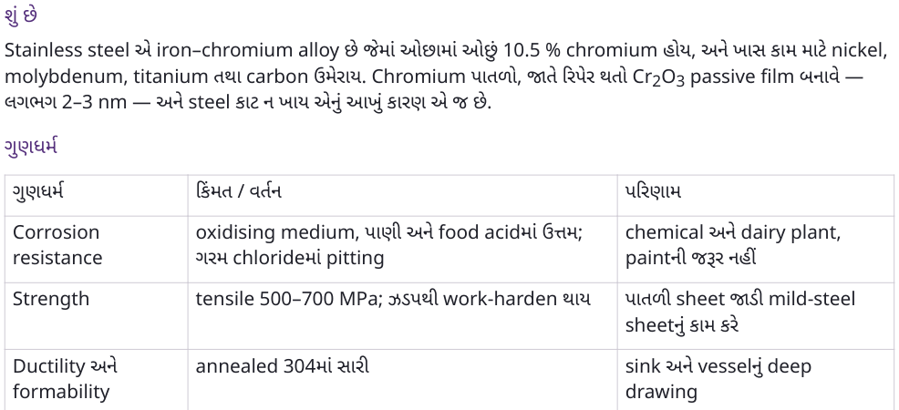
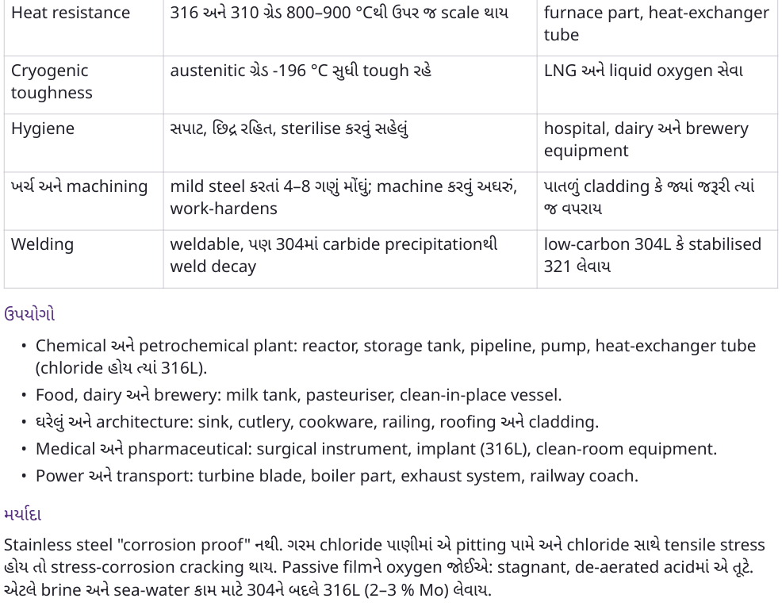
ORQ.2 (c) · Give the composition, property and application of Gun metal. · 7 marks
Definition and composition
Gun metal (also written gunmetal) is a copper–tin–zinc alloy — a modified bronze. It is called gun metal because it was used for cannon and gun barrels, where it had to be strong, corrosion resistant and castable.
![Q.2 (c) OR: preserved source formula, table or diagram, page 20. Extracted text context (formula notation may be incomplete): Element Percentage Function in the alloy Copper (Cu) 86–88 % base metal; gives conductivity, ductility and toughness Tin (Sn) 8–10 % raises strength and hardness and improves resistance to sea water Zinc (Zn) 2–4 % deoxidises the melt, improves fluidity and pressure tightness, and makes the alloy cheaper Lead (Pb) 0–1.5 % (leaded gun metal) improves machinability and bearing behaviour Impurities < 1 % total (Fe, Sb, As, Ni) iron above 0.2 % makes it brittle](summer-2026.assets/0032.webp)
Properties
![Q.2 (c) OR: preserved source formula, table or diagram, page 21. Extracted text context (formula notation may be incomplete): Property Value / behaviour Why it matters Colour reddish-golden distinguishes it from yellow brass Density 8.7–8.8 g/cm3 heavier than brass Melting range about 900–1000 °C cast in sand and permanent moulds Tensile strength 220–300 MPa (sand cast) adequate for valve bodies Hardness 60–80 HB harder than brass, resists wear Corrosion resistance excellent in sea water, steam and dilute alkalis; superior to brass because tin stops dezincification the standard marine valve alloy Wear resistance and bearing quality low friction, good embeddability bushes and bearing shells Casting and pressure tightness high fluidity, feeds shrinkage, no porosity sound pressure castings Machinability good, especially the leaded grade threaded fittings](summer-2026.assets/0033.webp)
Applications
• Marine: sea-water valves, pumps, pipe fittings, propeller-shaft bearings, condenser water boxes.
• Steam and water services: boiler fittings, steam valves, gauge cocks, locomotive bearings (the classic use).
• General engineering: bearing bushes, worm wheels, gears for slow speeds, hydraulic valve bodies, statuary and medals.
• Electrical: switch and plug parts where corrosion matters more than conductivity.
Casting route — part and purpose
![Q.2 (c) OR: preserved source formula, table or diagram, page 21. Extracted text context (formula notation may be incomplete): Part of the process Purpose Induction or crucible furnace melts the charge under a cover to limit oxidation and zinc loss Degassing and deoxidation removes hydrogen porosity so the casting is pressure tight Sand or permanent mould gives the valve or bush shape; a metal mould gives a finer grain Chill or riser feeds shrinkage so the thick section does not pipe Machining and pressure test cuts the seat and thread and proves tightness at 1.5 × design pressure](summer-2026.assets/0034.webp)
Worked example — charge for a 100 kg melt
For the 87 Cu – 9 Sn – 4 Zn composition, and allowing 2 % melting loss of zinc only, find the charge.
Given: product mass = 100 kg · Cu 87 %, Sn 9 %, Zn 4 % · zinc loss = 2 % of the zinc charged
Copper needed = 0.87 × 100 = 87 kg
Tin needed = 0.09 × 100 = 9 kg
Zinc in the product = 0.04 × 100 = 4 kg
Total charge = 87 + 9 + 4.08 = 100.08 kg
Charge per 100 kg of gun metal: Cu 87 kg, Sn 9 kg, Zn 4.08 kg
Sanity check: the extra 0.08 kg is exactly the 2 % zinc that burns away, so the melt comes out at the required 4 % Zn.
Limitations
• Tin is expensive, so gun metal costs 2–3 times as much as brass; it is used only where its sea- water and wear resistance is essential.
• It cannot be used above about 250 °C because the strength falls sharply, and it is not suitable for strong acids or ammonia.
• Tin sweat and inverse segregation appear if the casting cools too slowly; lead above 1.5 % lowers strength and makes the alloy hot-short.
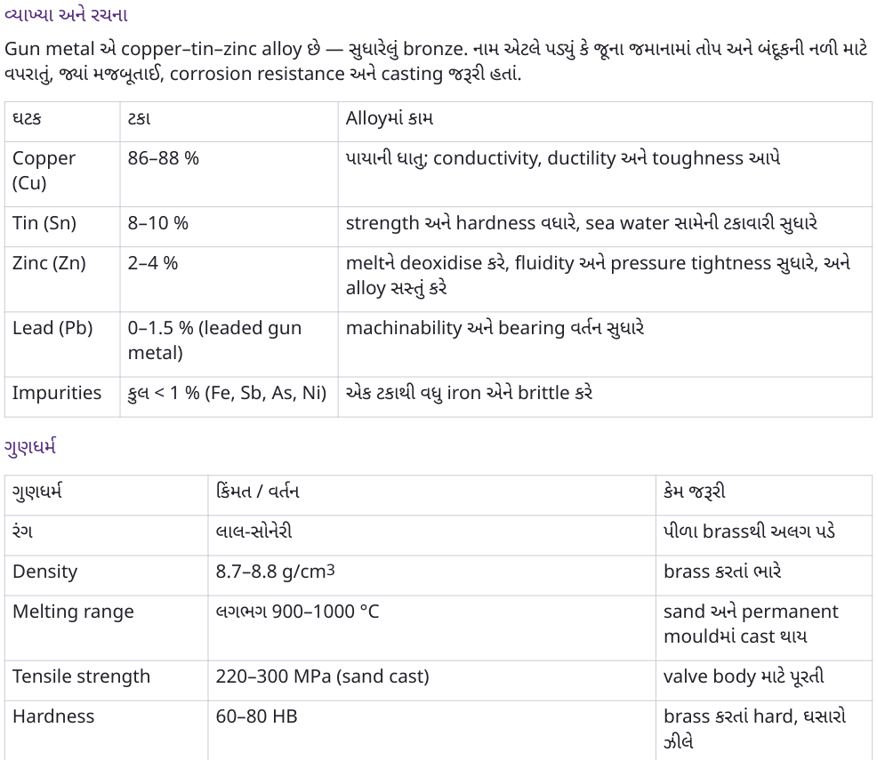
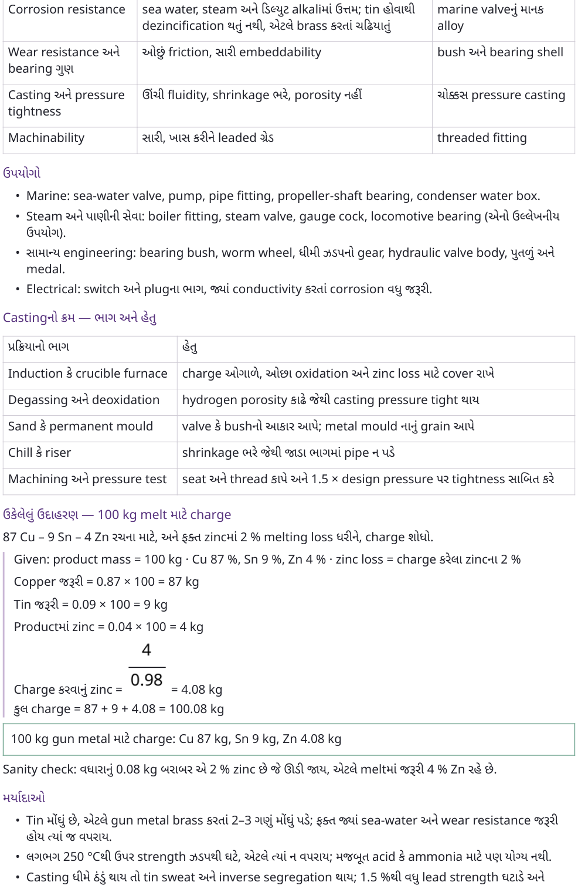
Question 3
Q3 · Forming, testing, rolling and forging
Q.3 (a) · Define: Material forming and testing. Write the Importance of material testing. · 3 marks
Definitions
Material forming is the group of manufacturing processes in which a material is given its final shape by plastic deformation or by flow — rolling, forging, extrusion, drawing, pressing, casting and moulding — without removing chips.
Material testing is the systematic measurement of the properties or the soundness of a material, either on a specimen cut from the lot (destructive) or on the finished part itself (non-destructive), so that its suitability for the intended duty can be judged.
Importance of material testing
• Safety: a pressure vessel or a crane hook must not fail in service; a tensile and an impact test prove the strength and toughness before use.
• Correct selection: comparing two candidate materials on measured values instead of guesswork — for example, choosing between 304 and 316L on a corrosion test.
• Quality control: confirming that each heat, casting or weld meets the specification, so a bad batch is rejected at the gate and not in the plant.
• Design data: handbooks and codes are built from test results; the engineer needs yield strength, elongation and creep data to size a part.
Example: boiler plate is accepted only after a tensile test, a bend test and a Charpy impact test on a sample from the same plate, because a single brittle plate can burst a boiler.
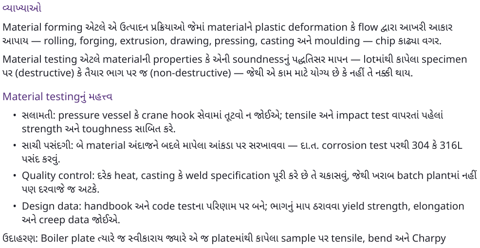
Q.3 (b) · Explain destructive and non-destructive testing of materials. · 4 marks
Definition
Destructive testing (DT) loads the material until it yields or breaks, so the specimen is spoiled and cannot go into service. Non-destructive testing (NDT) inspects the part without damaging it, so every finished piece can be checked and still used.
Destructive tests
![Q.3 (b): preserved source formula, table or diagram, page 25. Extracted text context (formula notation may be incomplete): Test What it measures Method in one line Tensile test yield strength, ultimate strength, elongation, reduction in area a standard specimen is pulled in a universal testing machine until it breaks Hardness test resistance to indentation (Brinell, Vickers, Rockwell) a ball, cone or diamond is pressed into the surface and the impression is measured Impact test toughness and brittle-fracture tendency (Izod, Charpy) a notched bar is struck by a swinging hammer; the energy absorbed is read Bend test ductility of plate and weld the specimen is bent through a fixed angle; cracks on the outer face mean rejection Fatigue test life under repeated stress the specimen is loaded and unloaded millions of times until it fails Creep test slow deformation at high temperature a constant load is held at constant temperature and extension is plotted against time](summer-2026.assets/0041.webp)
Non-destructive tests
Test Finds Method in one line
Visual inspection surface cracks, undercut, corrosion, wrong assembly
eye, magnifier, borescope and mirror
Dye penetration (DPT)
surface-breaking cracks in non- porous material
red dye enters the crack, developer draws it out as a bright line
Magnetic particle (MPI)
surface and near-surface defects in ferromagnetic steel
the part is magnetised and iron powder collects at the leakage flux
Ultrasonic (UT) internal flaws and thickness a high-frequency pulse is sent in and the echo from a flaw or the back wall is timed
Radiography (RT) internal porosity, slag, incomplete penetration
X-rays or gamma rays pass through and expose a film behind the part
Hydrostatic / pneumatic
leaks and strength of a pressure part
the part is pressurised with water or air and held; a drop in pressure or a weep fails it
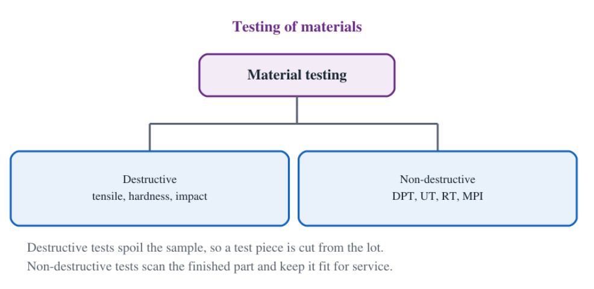
Fig. 3.1 · The two families of material testing.
Comparison
![Q.3 (b): preserved source formula, table or diagram, page 26. Extracted text context (formula notation may be incomplete): Point Destructive testing Non-destructive testing Sample specimen cut from the lot, spoiled the actual part, kept fit for use Coverage sample only — the rest is assumed similar 100 % of production is possible Defect found properties of the material discontinuities and flaws When used acceptance of a heat, design data, research in-process and final inspection, in-service checks Cost cheap per test, but the sample is lost equipment and skilled operator are costly](summer-2026.assets/0043.webp)
Limitation
Neither family is complete on its own. A tensile test proves the strength of a sample but says nothing about a crack in the particular vessel, and a dye-penetration test finds a crack but cannot measure strength. That is why a pressure vessel is released only after both a destructive test on test plates and full NDT of every weld.
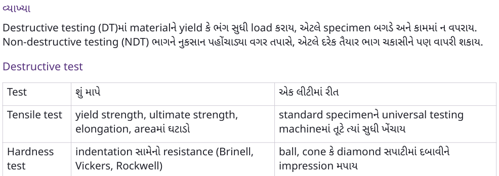
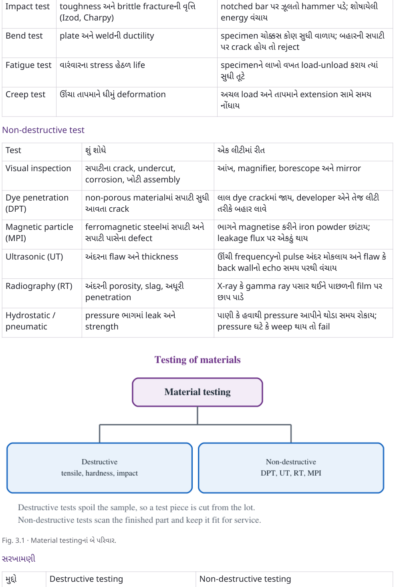
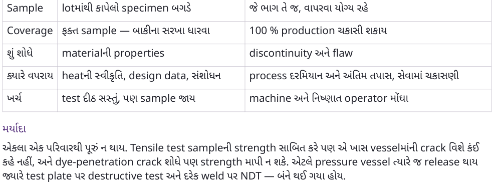
Q.3 (c) · Difference between rolling and forging. · 7 marks
Definitions
Rolling is a hot or cold forming process in which the material is passed between two rotating rolls whose gap is smaller than the entering thickness, so it is reduced in section and elongated. Forging is a forming process in which the heated billet is squeezed between a hammer or press and an anvil (or dies), so it takes the required shape by local plastic flow.
Construction — the equipment, part by part
![Q.3 (c): preserved source formula, table or diagram, page 28. Extracted text context (formula notation may be incomplete): Part Rolling mill Purpose Two or more rolls hardened steel or chilled cast iron, rotating in opposite directions grip the slab and reduce its thickness Roll gap and screw- down sets the exit thickness fixes the reduction per pass Rolling stand and housing carries the roll-load, which can be 1000 tonnes keeps the rolls parallel and rigid Reheat furnace and descaling soaks the slab at 1100–1250 °C and blasts off scale keeps the load low and the surface clean Run-out table, cooling and coiler cools and coils the strip gives the final microstructure and handling shape](summer-2026.assets/0047.webp)
Part Forging unit Purpose
Furnace heats the billet to 1000– 1200 °C
lowers the flow stress so it can be shaped
Hammer (drop or power) or press
delivers the blow or squeeze
deforms the billet in one or more blows
Upper and lower die carry the impression of the part
give the shape and trap the flash
Anvil and foundation absorbs the blow energy protects the shop floor and gives accuracy
Trimming press cuts away the flash gives the finished outline
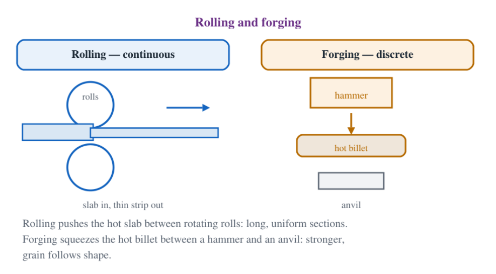
Fig. 3.2 · Rolling through a pair of rolls compared with hammer forging on an anvil.
Working — step and reason
1. Step 1 (rolling) — The slab is soaked in a reheat furnace. Reason: at 1200 °C the flow stress falls about ten times, so the rolls need far less power.
2. Step 2 (rolling) — Scale is broken off by high-pressure water. Reason: rolled-in scale becomes a surface defect that cannot be removed later.
3. Step 3 (rolling) — The slab enters the roll gap and is dragged in by friction. Reason: the roll surface speed exceeds the entry speed, so friction pulls the metal through and the section is reduced while the length grows.
4. Step 4 (rolling) — Several passes in reversing or tandem stands bring the thickness down to the ordered size. Reason: one pass gives only a limited reduction (about 10–30 %) before the bite angle is exceeded.
5. Step 1 (forging) — The billet is heated and placed on the lower die. Reason: hot metal flows without cracking and fills the impression.
6. Step 2 (forging) — The hammer or press strikes repeatedly. Reason: each blow deforms the outer layer and the grain flows along the die contour, which is why a forged part has a continuous grain flow and is stronger across the section.
7. Step 3 (forging) — The flash is trimmed and the part is heat treated. Reason: excess metal is needed to fill the die completely, and normalising removes the internal stress of the blows.
Difference between rolling and forging
Point Rolling Forging
Definition metal is passed between rotating rolls to reduce section
hot metal is squeezed by hammer or press between dies
Nature of process
continuous, steady-state discrete, blow by blow
![Q.3 (c): preserved source formula, table or diagram, page 30. Extracted text context (formula notation may be incomplete): Product long sections: plate, sheet, strip, bar, rail, rod individual parts: crankshaft, connecting rod, gear blank, lever Tooling cost very high mill cost, no die per shape die cost per part, but the die can make thousands of pieces Grain flow grain elongated in the rolling direction, so properties are directional grain follows the shape of the part, so it is stronger in the direction of service load Surface and tolerance excellent surface, tight thickness tolerance over the length good but needs machining allowance Strength obtained improves strength along the rolling direction only best combination of strength and toughness, especially for fatigue Size range from foil to 200 mm plate, tonnes of length a few grams to a 300-tonne turbine-rotor forging Defect laminations and rolled-in scale flash, laps and die wear Typical use structural plate, sheet for vessels and car bodies, rails highly stressed parts: shafts, crankshafts, hooks, landing gear](summer-2026.assets/0049.webp)
Worked example — reduction in one rolling pass
A 200 mm thick slab is rolled to 160 mm in one pass and the width stays constant at 1500 mm. Find the percentage reduction and the exit length if the entry length is taken as 1 m for a small element.
Given: h1 = 200 mm · h2 = 160 mm · width constant (b1 = b2) · L1 = 1 m
Volume constancy: h1 · L1 = h2 · L2
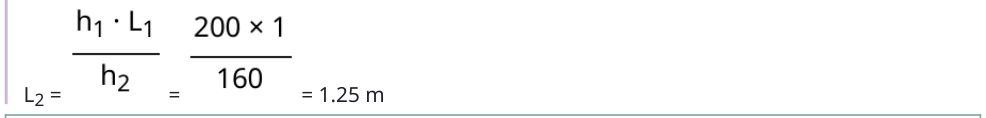
Reduction = 20 %; the material lengthens from 1.00 m to 1.25 m
Sanity check: a 20 % reduction lengthens the strip by exactly 1/0.8 = 1.25, and no metal is lost because the width was kept constant — correct.
Limitations
• Rolling cannot make a part with a closed shape; it gives a uniform section only.
• Forging needs a die per component, so it is economical only in reasonable quantity.
• Both are hot processes: scale, decarburisation and grain growth can spoil the surface and the properties unless cooling is controlled.
• Rolled sheet is anisotropic, and forged parts carry residual stress, so heat treatment follows both processes.
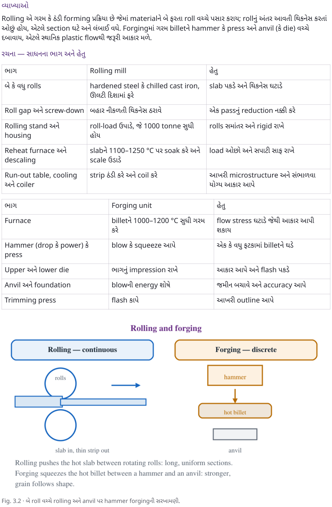
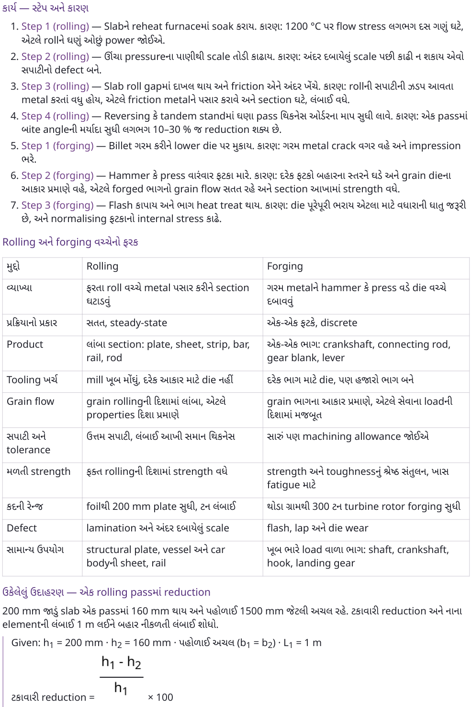
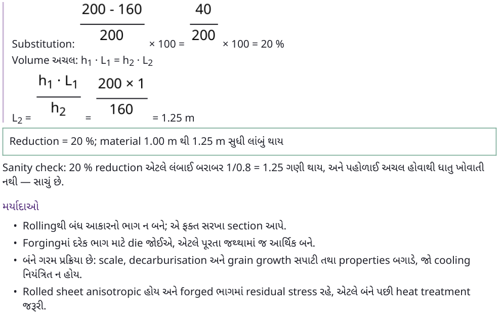
Q.3 (a) · Importance of material testing. · OR · 3 marks
Material testing is the measurement of the properties and soundness of a material before or during service. Its importance can be stated in four points.
• Safety and reliability: the strength and toughness measured in a tensile and an impact test decide whether a pressure vessel, a lifting hook or a boiler drum can carry its load without brittle failure.
• Right selection at lowest cost: comparing measured properties allows the cheapest material that meets the duty to be chosen, instead of over-specifying stainless steel where mild steel with a coating will do.
• Quality control and rejection of bad batches: chemical analysis, tensile test and NDT of welds catch a wrong heat or a bad casting in the shop, before it becomes a failure in the plant.
• Design data and standardisation: codes and handbooks are written from test results, so a designer needs yield strength, elongation, creep and fatigue data to fix dimensions.
Example: a boiler plate is released only after a tensile, a bend and a Charpy test on a sample from the same plate — one brittle plate can burst a whole boiler, so the test is a legal requirement, not a formality.
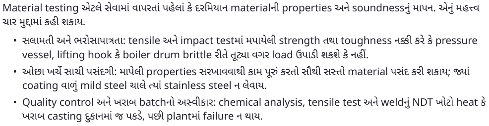
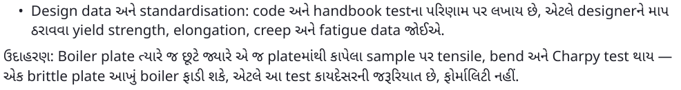
ORQ.3 (b) · Explain principle, procedure and applications. Dye Penetration Testing. · 4 marks
Principle
The dye penetration test (DPT) works on capillary action. A coloured liquid of low surface tension and high wetting power is applied to a clean surface. If a crack reaches the surface, the dye is drawn into it by capillary force. After the excess dye is removed from the surface, a white powder called the developer is applied; it draws the trapped dye back out and the crack shows as a bright red line against the white background.
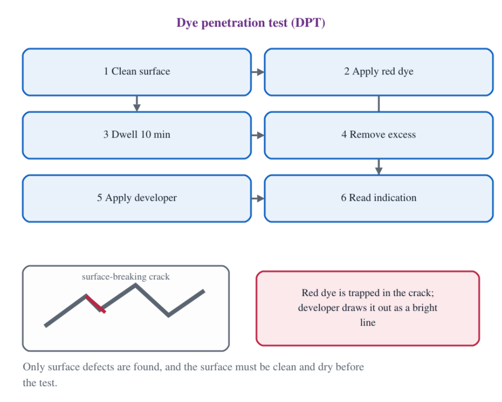
Fig. 3.3 · Six steps of DPT and how the developer reveals a surface crack.
Procedure — step and reason
1. Step 1 · Clean — The surface is degreased, dried and brushed. Reason: oil, paint or water blocks the mouth of the crack so the dye cannot enter.
2. Step 2 · Apply penetrant — Red dye is sprayed or brushed on and left for the dwell time, usually 10–30 minutes. Reason: capillary action needs time to fill a narrow crack.
3. Step 3 · Remove excess — The surface is wiped and washed with water or cleaner. Reason: only the dye outside the crack is removed, so the indication comes from the crack and not from the
surface.
4. Step 4 · Apply developer — A thin white powder layer is sprayed on. Reason: it acts as a blotter and pulls the dye out, and the white background gives contrast.
5. Step 5 · Inspect and record — The surface is examined under good light within 10–30 minutes. Reason: an indication fades as the dye spreads, so it must be read at once.
6. Step 6 · Clean and evaluate — The part is cleaned and the indication is judged against the acceptance standard. Reason: a long or branched line is a reject, a single small spot may be accepted.
Applications
• Welds in steel, stainless steel and aluminium — especially where MPI cannot be used, because DPT works on any non-porous material.
• Castings and forgings: surface cracks, laps, cold shuts and grinding cracks.
• Non-magnetic materials such as austenitic stainless steel, aluminium, titanium, ceramics and plastics.
• In-service inspection: turbine blades, compressor discs, aircraft parts, pressure-vessel nozzle welds.
Limitations
DPT finds only defects that are open to the surface — it cannot see porosity or lack of fusion inside a weld. The surface must be smooth and non-porous, the dye and developer are consumables, and the test is slower than visual inspection. That is why ultrasonic or radiography is used for internal flaws and DPT for the surface.
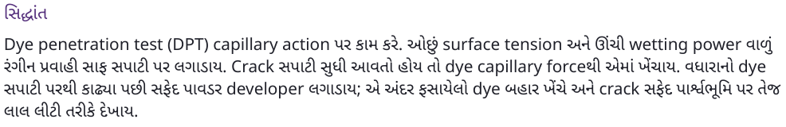
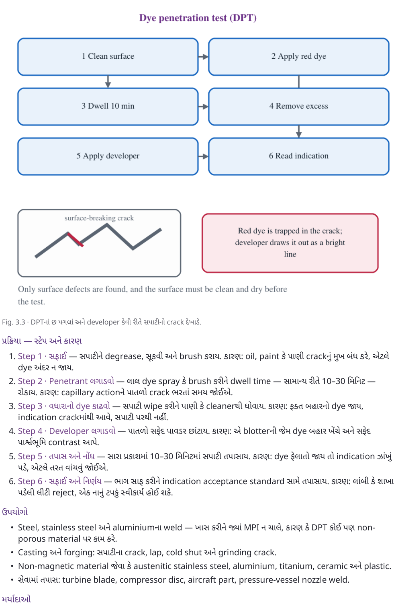
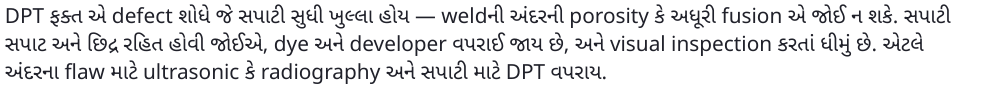
ORQ.3 (c) · Explain principle, procedure and applications Hydrostatic Testing. · 7 marks
Principle
The hydrostatic test proves the strength and tightness of a pressure part by filling it with water and raising the pressure above the design pressure, usually to 1.5 times the design pressure, holding it for a fixed time and looking for a leak, a permanent bulge or a pressure drop.
Water is used rather than air because water is almost incompressible. The energy stored in a water- filled vessel at test pressure is very small, so if it bursts the release is a small splash; a compressed- air test at the same pressure stores enough energy to destroy the shop. This is why the hydro test is the standard strength test and the pneumatic test is done only when water cannot be used.
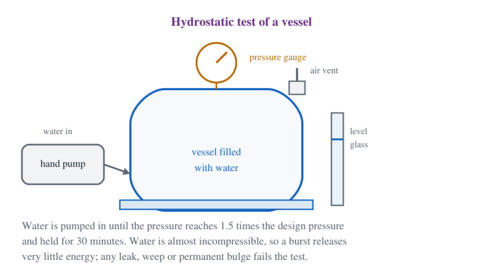
Fig. 3.4 · Hydrostatic test: water-filled vessel, pressure gauge and level glass.
Construction of the test set-up — part and purpose
Part Purpose
Test vessel itself the item to be proved; all openings blanked with proper blind flanges
Filling line and vent fill completely and let all air escape; air left inside makes the test unsafe and gives a false pressure drop
Hydro-test pump (hand or motor)
raises the pressure slowly and steadily to the test value
Calibrated pressure gauge
reads the test pressure; the gauge range is about 2 times the test pressure
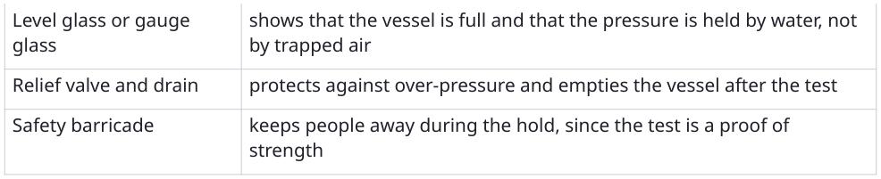
Procedure — step and reason
1. Step 1 · Prepare — All welds are finished and NDT is complete, the vessel is clean, and the safety valves are removed and their openings blanked. Reason: the test comes after fabrication, and a safety valve would open before the test pressure is reached.
2. Step 2 · Fill and vent — Water is filled from the bottom while the highest vent stays open until water overflows. Reason: any trapped air would compress under pressure and store energy, and would also make the gauge reading misleading.
3. Step 3 · Pressurise slowly — The pump raises the pressure in steps, up to 1.5 × design pressure. Reason: a slow, stepwise rise lets the metal yield gradually and lets the operator watch every joint.
4. Step 4 · Hold — The pressure is held for 30 minutes (10 minutes is the usual minimum in codes). Reason: a leak or a yielding part shows itself as a drop in pressure or a visible weep during the hold.
5. Step 5 · Inspect — Every welded joint, nozzle and flange is examined for weeping. Reason: a leak at the test pressure proves a defect that normal working pressure would not reveal.
6. Step 6 · Reduce and check — The pressure is brought down to the design pressure and held while the permanent set is checked across a marked diameter. Reason: a permanent (non- recoverable) bulge means the metal yielded, so the vessel is rejected even without a leak.
7. Step 7 · Drain, dry and record — Water is drained, the vessel is dried and a test certificate is signed. Reason: wet carbon steel rusts, and the certificate is the legal proof of the test.
Applications
• New pressure vessels, boilers, heat exchangers, reactors and storage tanks after fabrication — this is a code requirement before commissioning.
• Pipelines: cross-country and plant piping after laying, and after any hot work on the line.
• Gas cylinders and LPG cylinders, every cylinder at a fixed interval (typically 5 years).
• Valves, pumps and castings: body-pressure test before dispatch.
• After repair or alteration of any pressure part, and periodically in service as a proof test.
Worked example
A reactor is designed for 10 bar working pressure. Find the hydro test pressure, and the additional water needed to pressurise it if the vessel volume is 5 m3 and water compresses by 0.05 % per 10 bar.
Given: design pressure Pd = 10 bar · test factor = 1.5 · volume V = 5 m3 · compressibility = 0.05 % per 10 bar
Test pressure Pt = 1.5 × Pd = 1.5 × 10
Pt = 15 bar
Extra water = 0.00075 × 5 m3 = 0.00375 m3
Test pressure = 15 bar; extra water ≈ 3.75 litres
Sanity check: 3.75 litres is a bucketful for a 5000 litre vessel — this is exactly why water is safe: almost no energy is stored, so a failure is a splash and not a blast.
Limitations
• The vessel must be dried after the test; residual water causes rust and, in stainless steel, chloride pitting.
• It cannot be used where water would damage the internals (catalyst, refractory lining, dry product) — a pneumatic test is used there with strict safety distance.
• It proves strength and tightness only; it does not replace NDT of the welds, because a defect may close up under pressure and leak only later in service.
• A very high proof pressure can itself damage the vessel by local yielding, so the factor is limited by code and the metal temperature must be above its transition temperature.
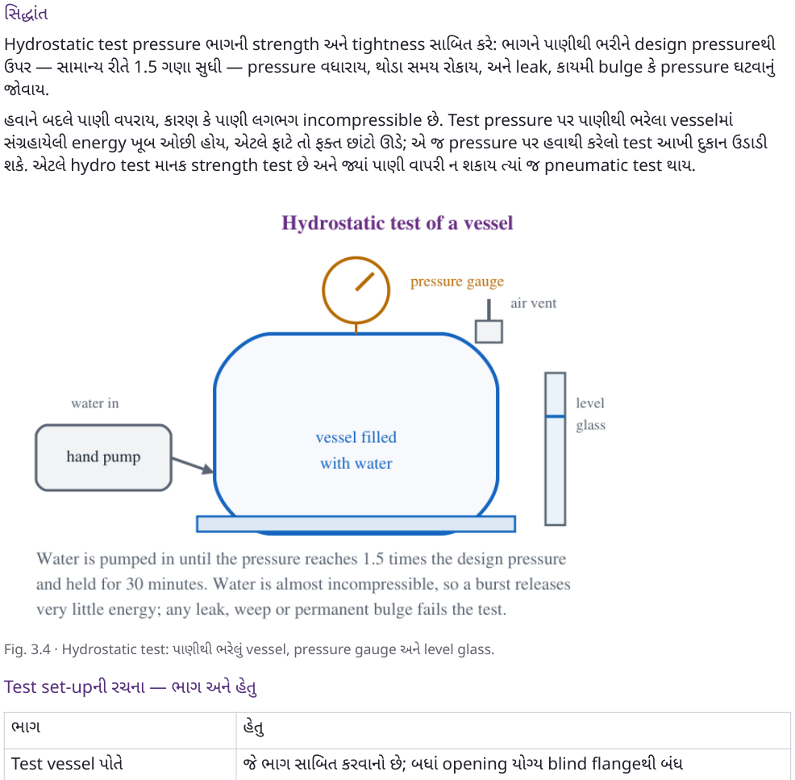
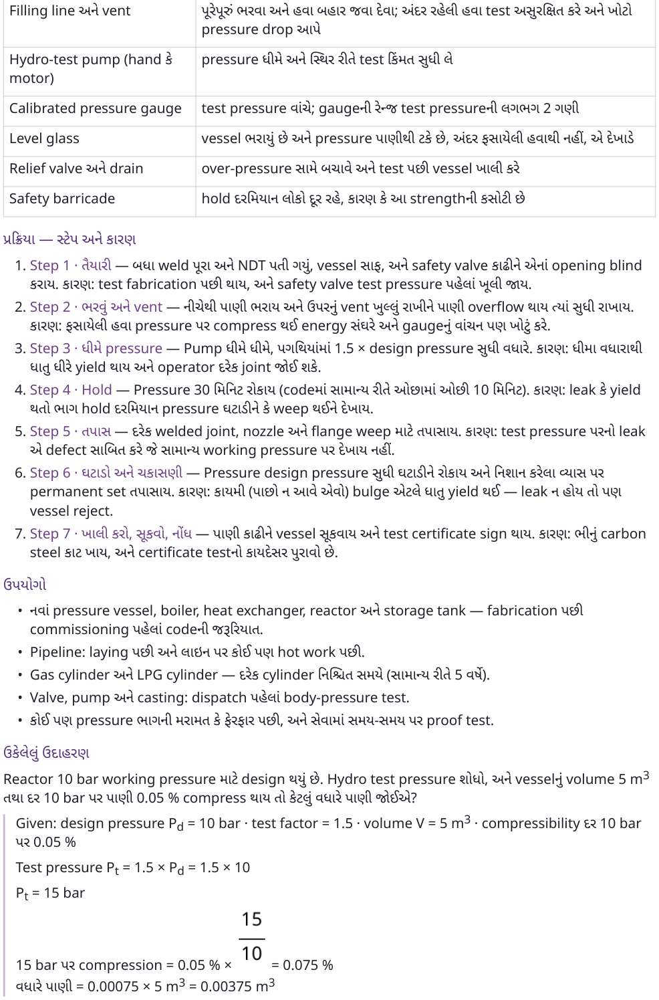
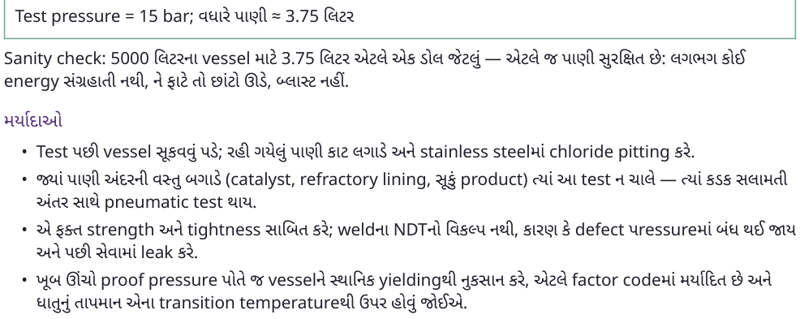
Question 4
Q4 · Thermal insulation, borosilicate and soda-lime glass, porcelain
Q.4 (a) · Explain Thermal Insulation and write properties and application of thermal insulation. · 3 marks
Definition
Thermal insulation is the use of a low-conductivity material — or a vacuum, or a reflective surface — to reduce the heat flow between a hot body and its surroundings. The insulating material itself is also called insulation. It does not stop heat; it only slows it down by trapping still air in small cells or fibres, because still air has a thermal conductivity of only about 0.026 W/m·K.
Properties required of a good insulator
Property Typical requirement Why
Thermal conductivity k
as low as possible, 0.03–0.06 W/m·K directly sets the heat loss for a given thickness
Density low, 40–150 kg/m3 low weight and small structural load
Temperature limit
up to the hot-face temperature without melting or shrinking
rock wool 700 °C, glass wool 450 °C, calcium silicate 650 °C
Fire resistance non-combustible, no smoke safety in a plant handling hot oil
Moisture resistance
hydrophobic or with a vapour barrier
wet insulation loses all its value: water has k ≈ 0.6 W/m·K, 20 times air
Mechanical strength
enough to bear cladding and foot traffic
insulation must not crush and leave a bare patch
Chemical inertness
no attack on the steel it covers chloride-free insulation avoids stress- corrosion cracking of stainless steel
Cost and availability
cheap in the required form insulation is used in large area
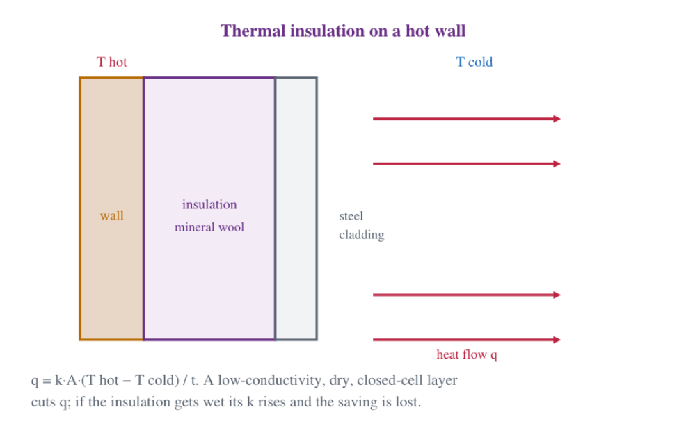
Fig. 4.1 · Insulation layer on a hot wall and the heat flow it reduces.
Applications
• Process equipment: reactors, distillation columns, heat exchangers, storage tanks and steam pipelines, where a bare surface wastes steam and creates a burn hazard.
• Furnaces, kilns and boilers: refractory brick inside, mineral wool and cladding outside, to cut fuel consumption.
• Buildings and cold stores: roof and wall insulation, and cold-room panels (PUF) that keep the refrigeration load down.
• Cryogenic service: perlite and vacuum-jacketed lines for liquid nitrogen and oxygen.
• Personnel protection: a surface above 60 °C must be lagged or guarded, so insulation is a safety requirement and not only an energy saving.
Example of the saving: a bare 100 mm steam pipe at 180 °C loses about 1000 W per metre; with 50 mm of mineral wool the loss falls below 100 W per metre — a ten-fold saving that pays for the lagging in a few months.
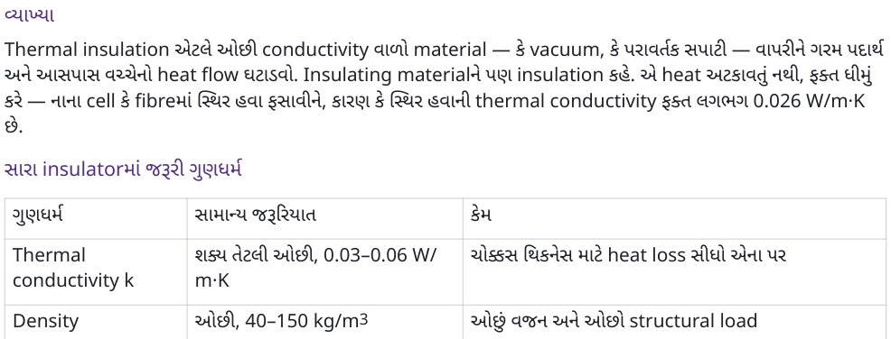
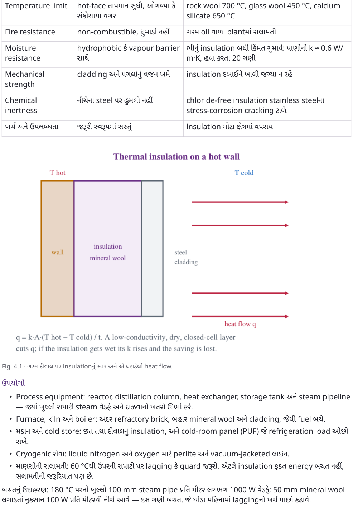
Q.4 (b) · What is Insulation? List types of insulation and give examples of each type of insulation. · 4 marks
Definition
Insulation is any material or arrangement used to reduce the transfer of heat, sound or electricity between two regions. In thermal work it is a low-conductivity material that traps still air and so reduces the heat flow between a hot or cold surface and its surroundings.
Types of thermal insulation
![Q.4 (b): preserved source formula, table or diagram, page 44. Extracted text context (formula notation may be incomplete): Type How it works Examples Fibrous (blanket, batt, board) fine fibres trap air in millions of small pockets glass wool, rock (mineral) wool, ceramic fibre blanket, slag wool Cellular (foam) closed cells of gas give low conductivity and low water pick-up polyurethane foam (PUF), polystyrene (thermocol), phenolic foam, foam glass loose grains fill any shape and trap air between them vermiculite, perlite, expanded clay, sawdust, rice husk Granular / loose fill a low-emissivity surface reflects radiation back aluminium foil, aluminised sheet, foil- faced bubble wrap Reflective (metallic foil) Vacuum removes the gas, so conduction and convection almost stop vacuum-jacketed cryogenic line, vacuum flask, vacuum insulated panel a dense, heat-resistant brick or castable slows the heat and takes the temperature fireclay brick, high-alumina brick, calcium silicate block, castable refractory Refractory / block DIY / natural cheap local material used in low- temperature work cork board, woollen felt, coir, straw, paper wool](summer-2026.assets/0071.webp)
Choice of type
• Temperature decides first: up to 450 °C glass wool, up to 700 °C rock wool, above 1000 °C ceramic fibre or refractory brick.
• Shape decides second: pipe work takes a preformed section, a tank takes a mattress or sprayed foam, a flat roof takes boards or loose fill.
• Moisture decides third: cold surfaces need a closed-cell foam with a vapour barrier, otherwise water condenses inside the insulation and the k value jumps.
• Fire and chemical limits decide last: no combustible foam near a furnace, and no chloride- bearing insulation on stainless steel.
Example: a 300 mm steam main at 250 °C is lagged with preformed rock-wool sections, wire-mesh and aluminium cladding; a chilled-water line at 7 °C uses PUF with a vapour barrier; a boiler at 1000 °C has fireclay brick inside and mineral wool outside.
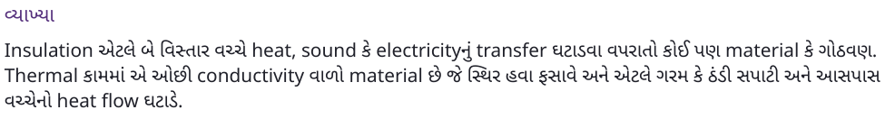
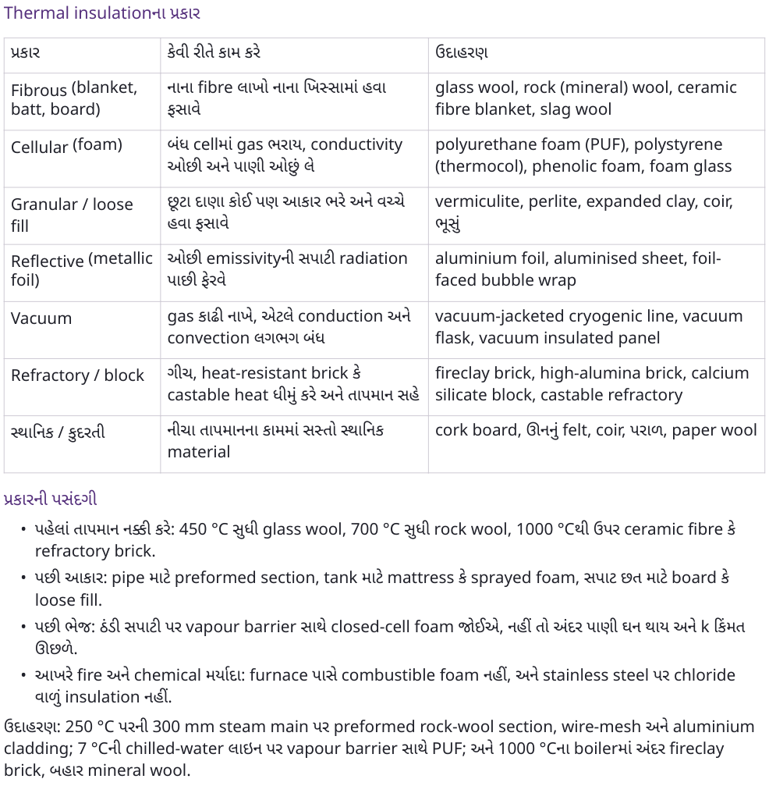
Q.4 (c) · Give composition and uses of Borosilicate glass. · 7 marks
What borosilicate glass is
Borosilicate glass is a glass in which a large part of the silica is replaced by boron trioxide B2O3. The boron enters the silica network as BO3 and BO4 groups, tightens the network, and reduces both the thermal expansion and the tendency of the glass to be attacked by water and chemicals. It is the familiar "Pyrex" type of glass.
Composition
![Q.4 (c): preserved source formula, table or diagram, page 46. Extracted text context (formula notation may be incomplete): B2O3 (boric oxide) 10–13 % the key oxide: lowers thermal expansion and raises resistance to water and acids Na2O (soda) 4–8 % flux; lowers the melting temperature Al2O3 (alumina) 2–7 % increases chemical durability and prevents phase separation K2O (potash) 0–1 % co-flux, improves workability CaO, MgO 0–1 % stabilisers As2O3 or Sb2O3 0.1–0.5 % fining agent: removes bubbles from the melt](summer-2026.assets/0075.webp)
Properties
![Q.4 (c): preserved source formula, table or diagram, page 46. Extracted text context (formula notation may be incomplete): Property Value Engineering meaning 3.2–3.3 × 10−6/K (soda-lime glass is 9 × 10−6/K) Coefficient of thermal expansion resists thermal shock; can go from boiling water to ice without cracking Maximum working temperature about 500 °C continuous usable for hot plates and digestion vessels ΔT of about 150 °C autoclave and steriliser duty Thermal shock resistance Chemical resistance excellent against water, acids and salt solutions; attacked by HF and hot concentrated alkali laboratory and pharmaceutical ware Hydrolytic class Class I (the best, USP Type I) no leaching into the contents Refractive index 1.47 optical and lamp work Electrical resistivity high, 1010 Ω·cm at 250 °C insulator in lamp and electronic parts Density 2.23 g/cm3 lighter than soda-lime glass](summer-2026.assets/0076.webp)
Working — how the boron content gives these properties
1. Step 1 — B2O3 replaces part of the Na2O–SiO2 network. Reason: fewer non-bridging oxygen atoms remain, so the network is more tightly cross-linked.
2. Step 2 — A tighter network vibrates less on heating. Reason: the coefficient of expansion falls to about one third of that of soda-lime glass.
3. Step 3 — A low expansion means low thermal stress on sudden cooling. Reason: stress is proportional to E·α·ΔT, so borosilicate survives a ΔT of about 150 °C where soda-lime glass cracks at about 60 °C.
4. Step 4 — The tight network also leaves little room for water or acid molecules to enter and leach out alkali. Reason: the glass is chemically durable and gets hydrolytic class I.
Worked example — thermal stress in a glass beaker
Compare the thermal stress produced in a borosilicate beaker and a soda-lime beaker when both are cooled suddenly by ΔT = 100 °C. Take E = 70 GPa and α = 3.3 × 10−6/K for borosilicate, α = 9.0 × 10−6/K for soda-lime.
Given: E = 70 GPa = 70 × 103 MPa · ΔT = 100 °C · αborosilicate = 3.3 × 10−6/K · αsoda-lime = 9.0 × 10−6/K
Formula: σ = E · α · ΔT
Borosilicate: σ = 70 × 103 × 3.3 × 10−6 × 100
σ = 23.1 MPa
Soda-lime: σ = 70 × 103 × 9.0 × 10−6 × 100
σ = 63.0 MPa
σ ≈ 23 MPa for borosilicate against ≈ 63 MPa for soda-lime
Sanity check: the breaking strength of glass is about 50–70 MPa, so the soda-lime beaker is at its limit and cracks, while the borosilicate one is at one third — which is why laboratory ware is borosilicate.
Uses
• Laboratory and analytical glassware: beakers, flasks, burettes, pipettes, reagent bottles, Soxhlet and distillation assemblies.
• Pharmaceutical and medical: ampoules, vials, syringes, blood-collection tubes (Type I glass because it does not leach alkali into the drug).
• Chemical and process plant: sight glasses, gauge glasses, pipe sections for corrosive service, immersion heaters.
• Household: ovenware, coffee pots, baby bottles, microwave cookware.
• Technical: halogen lamp and sodium lamp envelopes, solar water-heater tubes (evacuated glass tubes), telescope mirrors and optical windows.
Limitations
• Borosilicate is attacked by hydrofluoric acid and by hot concentrated alkali; it is not suitable for caustic service above about 60 °C.
• It is brittle and has low tensile strength, so it is used in compression-prone shapes and with rubber or PTFE gaskets.
• B2O3 is volatile in the melt, so the composition drifts in the furnace unless the melt is covered, and B2O3 vapour attacks the refractory.
• It is 2–3 times the price of soda-lime glass, so it is used only where thermal shock or chemical inertness is essential.
Q.4 (a) · Factors affecting thermal conductivity of insulators · OR · 3 marks
Thermal conductivity k of an insulator is the heat that crosses unit area of unit thickness per unit temperature difference. For an insulator k is low, 0.03–0.06 W/m·K, and it is affected by the following factors.
• Porosity and trapped air: the more still air is trapped in cells or fibres, the lower the k. Air itself has k ≈ 0.026 W/m·K, so a highly porous foam is a good insulator.
• Moisture content: this is the biggest factor in practice. Water has k ≈ 0.6 W/m·K, about 20 times that of air, so a wet insulator loses almost all its value — hence the vapour barrier on cold lines.
• Density: k falls as density falls, but only up to a point; below about 30 kg/m3> radiation and convection through the open pores raise k again.
• Temperature: k rises with temperature because radiation across the pores grows as T4; that is why a furnace wall is designed in layers of different materials.
• Structure of the material: closed-cell foam has a lower k than open-cell foam, and a fibrous blanket conducts along the fibres, so its k is higher when the fibres run across the heat flow.
• Ageing and compression: foam cells collapse and blow-hole gas escapes, and a compressed blanket loses its air pockets, so k rises with age and with poor installation.
Example: dry mineral wool at 100 kg/m3 has k ≈ 0.04 W/m·K; the same wool soaked with water rises to about 0.5 W/m·K, which is why insulation that has been rained on before cladding is rejected.
ORQ.4 (b) · Give composition and uses of Soda lime glass · 4 marks
What it is
Soda-lime glass is the ordinary, cheapest glass — the glass of windows, bottles and tumblers. It is a sodium calcium silicate: silica is the glass former, soda is the flux that makes it melt at a workable temperature, and lime stabilises the network so that the glass does not dissolve in water.
Composition
![Q.4 (b) OR: preserved source formula, table or diagram, page 50. Extracted text context (formula notation may be incomplete): Constituent Percentage by mass Function SiO2 (sand) 70–74 % glass former; gives hardness and durability Na2O (soda ash) 12–16 % flux; lowers the melting point from about 1700 °C to about 1400 °C CaO (lime, from limestone) 5–12 % stabiliser; makes the glass insoluble in water and raises chemical durability MgO 0–4 % improves durability and lowers the working temperature Al2O3 0–2 % increases strength and resistance to devitrification K2O 0–1 % improves lustre and workability Fe2O3 less than 0.05 % impurity; gives the green tint of thick bottle glass Colouring / decolourising oxides 0.1–1 % Cr2O3 green, CoO blue, Se pink, MnO2 decolouriser](summer-2026.assets/0082.webp)
Properties
Property Value Meaning
9 × 10−6/K cracks on sudden cooling beyond about 60 °C
Coefficient of thermal expansion
Softening temperature
about 700 °C cannot take hot-plate duty
Density 2.5 g/cm3 ordinary weight
![Q.4 (b) OR: preserved source formula, table or diagram, page 51. Extracted text context (formula notation may be incomplete): Refractive index 1.52 good optical clarity for windows Chemical resistance good against water and neutral solutions; poor against hot alkali and HF bottles are safe for food and drink Strength compressive 700–1000 MPa, tensile only 30–70 MPa use in compression; glass fails in tension Cost cheapest of all glasses mass production of bottles and window panes Electrical resistivity high at room temperature insulator, but not at high temperature](summer-2026.assets/0083.webp)
Uses
• Flat glass: window panes, shop fronts, mirrors, toughened and laminated safety glass for vehicles and buildings.
• Containers: bottles for water, soft drinks, beer, milk and medicine (the largest single use), and jars for food.
• Domestic ware: tumblers, jugs, bowls, tableware.
• Lighting and electrical: lamp bulbs and tubes (outer envelope), insulators, switch covers.
• Other: glass blocks, decorative glassware, greenhouse glazing, solar panels.
Limitations
Soda-lime glass cannot take thermal shock: with α = 9 × 10−6/K a sudden cooling of about 60 °C already develops a stress equal to its tensile strength, so a hot jar put into cold water cracks. It is also attacked by hot alkali and by hydrofluoric acid, and it leaches a little alkali into water over long storage — which is why pharmaceutical vials are made of borosilicate (Type I) and not of soda-lime glass.
ORQ.4 (c) · Give Composition, properties and uses of porcelain · 7 marks
What porcelain is
Porcelain is a white, vitrified, non-porous ceramic made from a mixture of kaolin (china clay), feldspar and quartz, fired at 1250–1400 °C. During firing the feldspar melts and forms a glass that binds the clay and quartz particles, so the body becomes dense and impermeable — this is what separates porcelain from ordinary earthenware, which stays porous.
Composition
Constituent Percentage Function
![Q.4 (c) OR: preserved source formula, table or diagram, page 53. Extracted text context (formula notation may be incomplete): Kaolin / china clay (Al2O3·2SiO2·2H2O) 40–50 % gives plasticity for shaping and whiteness after firing Feldspar (K2O·Al2O3·6SiO2) 25–35 % flux: melts at 1100–1200 °C and forms the glass that vitrifies the body Quartz / flint (SiO2) 20–30 % filler: reduces shrinkage and gives rigidity and thermal stability Glaze (feldspar + quartz + clay, with colouring oxides) thin surface layer makes the surface smooth, non-absorbent and easy to clean](summer-2026.assets/0086.webp)
Properties
![Q.4 (c) OR: preserved source formula, table or diagram, page 53. Extracted text context (formula notation may be incomplete): Property Value / behaviour Engineering meaning Porosity zero after firing (vitrified) does not absorb water, can hold liquids Density 2.3–2.5 g/cm3 dense body Compressive strength very high, 400–700 MPa good in compression, as in insulators Tensile and impact strength low; brittle cannot be used in tension or shock Dielectric strength excellent, and low dielectric loss high-voltage insulators Dielectric loss and power factor low and stable with frequency capacitors and RF insulators Thermal expansion about 4–5 × 10−6/K moderate thermal shock resistance Maximum service temperature about 1000 °C for the body refractory and kiln furniture Chemical resistance excellent against water, acids and alkalis except HF and hot caustic chemical stoneware, laboratory ware Hardness 6–7 on the Mohs scale resists scratching and abrasion Colour and finish white, translucent when thin, glossy glaze tableware and sanitaryware](summer-2026.assets/0087.webp)
Manufacturing — step and reason
1. Step 1 · Blunging — Clay, feldspar and quartz are mixed with water into a slip. Reason: water separates the particles so the mix is uniform.
2. Step 2 · Shaping — The body is shaped by throwing, jiggering, pressing, extrusion or slip casting. Reason: clay is plastic only when wet, so shaping comes before firing.
3. Step 3 · Drying — The article is dried slowly to about 1 % moisture. Reason: fast drying shrinks the outside first and cracks the ware.
4. Step 4 · Bisque firing — The first firing at about 900–1000 °C burns off organic matter and gives a strong but still porous body. Reason: the ware can now be handled while the glaze is applied.
5. Step 5 · Glazing — The glaze slip is sprayed or dipped on. Reason: fusion of the glaze in the next firing gives the non-absorbent, easy-clean surface.
6. Step 6 · Glost firing — The second firing at 1250–1400 °C vitrifies the body and matures the glaze. Reason: feldspar melts, the open pores close, and the body becomes non-porous — this is the step that makes it porcelain.
7. Step 7 · Sorting and testing — The ware is checked for crazing, warpage and dielectric strength. Reason: a crazed glaze lets water into the body and destroys an insulator.
Uses
• Electrical: high-voltage and low-voltage insulators, bushings, capacitor dielectrics, switch bases — porcelain is the classic insulator because it is strong in compression and has a very low dielectric loss.
• Chemical plant: stoneware pipes, tower packings, valve parts, acid-proof tiles and labouratory ware for corrosive service.
• Domestic: tableware, cups and plates, sanitaryware (wash basins, WC pans), tiles.
• Industrial: kiln furniture, saggers, grinding media, wear-resistant linings, dental and artificial- teeth porcelain.
• Laboratory: crucibles, combustion boats, spark-plug insulators.
Worked example — why porcelain is used in compression
A porcelain insulator carries a compressive stress of 2.5 MN/m2 and a bending stress of 60 MN/m2
at the same section. Its compressive strength is 500 MN/m2 and tensile strength 40 MN/m2. Find the factor of safety in each case and comment.
Given: σcomp = 2.5 MN/m2 · σbend = 60 MN/m2 · strength in compression = 500 MN/m2 · strength in tension = 40 MN/m2
FoS = 200 in compression, but only 0.67 in bending — the part would already have failed
Sanity check: a factor below 1 means failure, so the design must be changed to keep the porcelain in compression — which is exactly why an insulator is shaped as a stack of skirts in compression and is never used as a beam.
Limitations
• Porcelain is brittle: it has almost no ductility and fails without warning, so it cannot be used where impact or bending is expected.
• It cannot take sudden temperature change; repeated heating and cooling crazes the glaze and then cracks the body.
• It is attacked by hydrofluoric acid and by hot concentrated alkali, which dissolve the silica network.
• Firing shrinkage of 10–15 % must be allowed in the mould, and the firing is energy intensive, so large or thick pieces are difficult and costly.
Question 5
Q5 · Rubber, plastics, fibres, varnishes, gaskets and paints
Q.5 (a) · Write Difference between natural and vulcanized rubber. · 3 marks
Natural rubber is cis-polyisoprene obtained from the latex of the rubber tree; it is soft, sticky and weak. Vulcanised rubber is natural or synthetic rubber heated with sulphur (2–5 %) so that sulphur bridges form between the long chains and lock them into a three-dimensional network.
![Q.5 (a): preserved source formula, table or diagram, page 57. Extracted text context (formula notation may be incomplete): Point Natural rubber Vulcanised rubber Structure long, separate chains with weak van der Waals force between them chains cross-linked by sulphur bridges into a 3-D network Tensile strength low, 1.5–3 MPa high, 15–30 MPa Elasticity good but it creeps and takes a permanent set excellent; returns to shape over a wide temperature range Effect of temperature soft and sticky when warm, hard and brittle when cold serviceable from about −40 °C to 100 °C Solubility swells and dissolves in petrol, benzene and oils only swells, does not dissolve; far better oil resistance Hardness and abrasion soft, wears quickly harder, good abrasion resistance Chemical resistance poor better against acids, alkalis and oxidation Use adhesive tape, eraser, crepe sheet — limited tyres, hoses, gaskets, belts, footwear, cable insulation](summer-2026.assets/0093.webp)
Example: natural rubber latex is used to make a dipped glove that is weak and sticky; the same glove after vulcanisation is strong, elastic and can be sterilised — a tyre could not be made from unvulcanised rubber at all, because it would soften on a hot road.
Q.5 (b) · Give Classification of plastic explain any one. · 4 marks
Definition
Plastics are high polymers, natural or synthetic, that can be softened by heat or a solvent and shaped under pressure. Their long-chain molecules are held by strong covalent bonds along the chain and weak forces between chains.
Classification
![Q.5 (b): preserved source formula, table or diagram, page 58. Extracted text context (formula notation may be incomplete): Basis Types Examples thermoplastic · thermosetting PE, PVC, PP / bakelite, epoxy, melamine By behaviour on heating By source natural · synthetic cellulose acetate, casein / PE, PVC, nylon By structure homopolymer · copolymer · blend PE / SBR, ABS / PC-ABS By application commodity · engineering · specialty PE, PP / nylon, POM / PEEK, PTFE, polyimide By crystallinity amorphous · semi-crystalline PS, PMMA / PE, PP, nylon](summer-2026.assets/0096.webp)
Explanation of one class — thermoplastic
A thermoplastic softens on heating and can be reshaped again and again, because its chains are held together only by weak secondary forces; heating lets the chains slide past one another and cooling locks them again. No cross-linking takes place, so the process is reversible.
Point Thermoplastic
Structure long separate chains, no cross-links
On heating softens, flows; on cooling, hardens — fully reversible
Recycling easy; scrap can be reground and remoulded
Solubility soluble in suitable solvents, so it can be cemented
Strength good, but creeps under steady load at high temperature
Example
A bucket is made of HDPE, a thermoplastic, so that a cracked or rejected bucket can be reground and moulded again. A melamine dinner plate, being thermosetting, cannot be softened again — the same property gives it a harder surface and better hot-liquid resistance.
Q.5 (c) · Give Classification of fiber explain any one. · 7 marks
Definition
A fibre is a long, thin, flexible thread of material whose length is at least a hundred times its diameter, and which can be spun into yarn or woven into fabric, or used as reinforcement in a composite. The high length-to-diameter ratio and the alignment of the molecules along the axis give a fibre its strength and flexibility.
Classification
![Q.5 (c): preserved source formula, table or diagram, page 60. Extracted text context (formula notation may be incomplete): Group Sub-group Examples Natural — vegetable seed, bast, leaf, fruit cotton; jute, flax, hemp; sisal; coir Natural — animal hair, silk wool, cashmere, mohair; silk Natural — mineral mineral asbestos, basalt fibre Synthetic — regenerated from cellulose or protein rayon (viscose), acetate, cellulose triacetate polyamide, polyester, polyurethane nylon 6,6; PET; spandex Synthetic — condensation polymer vinyl and acrylic polypropylene, acrylic, polyethylene, PVC Synthetic — addition polymer aramid, carbon, glass Kevlar, carbon fibre, E-glass fibre Synthetic — high performance](summer-2026.assets/0099.webp)
Fig. 5.1 · The two main families of textile fibre.
Explanation of one class — synthetic fibres (nylon as the example)
Nylon is a polyamide, made by the condensation polymerisation of adipic acid and hexamethylene diamine. The repeating unit is held by amide bonds, and hydrogen bonding between neighbouring chains gives the fibre its strength. It is melt-spun: the polymer is melted and forced through a spinneret with fine holes, and the filaments are drawn to several times their length so that the
chains align along the axis.
![Q.5 (c): preserved source formula, table or diagram, page 61. Extracted text context (formula notation may be incomplete): Property Behaviour Engineering meaning Tenacity high, 4–8 g/denier strong for its weight; ropes and tyre cord Elasticity excellent, recovers almost completely hosiery, stretch fabric, safe slings Abrasion resistance very good ropes, conveyor belts, brush bristles Moisture regain low, 3.5–4.5 % dries quickly, but clammy in hot weather Chemical resistance good against alkalis; attacked by strong acids and phenol not for acid service Heat melts at about 250 °C, softens near 220 °C not for high-temperature use Density 1.14 g/cm3 lighter than cotton and wool Dyeability good, dyed in the fibre or the yarn coloured fabric](summer-2026.assets/0101.webp)
Working — from polymer to fibre
1. Step 1 · Polymerisation — Adipic acid and hexamethylene diamine are heated together and condense, losing water, to give the polyamide. Reason: the reaction has to reach a high molecular weight before spinning, because short chains give a weak fibre.
2. Step 2 · Melt spinning — The molten polymer is pumped through a spinneret. Reason: the fine holes decide the filament diameter, which decides the feel and strength of the yarn.
3. Step 3 · Quenching — The filaments are cooled in air. Reason: fast cooling gives fine crystals and a smooth surface.
4. Step 4 · Drawing — The filaments are stretched 3–5 times their length between rollers. Reason: the chains align along the axis, so the fibre becomes many times stronger — this step is what turns a weak filament into a strong fibre.
5. Step 5 · Texturising, crimping and cutting — The yarn is crimped or cut to staple length. Reason: crimp gives bulk and warmth; staple allows blending with cotton.
Worked example — linear density of a yarn
A 1 km length of nylon filament weighs 4.4 g. Express its linear density in denier and in tex.
Given: length = 1 km = 1000 m · mass = 4.4 g
Denier = 9 × tex = 9 × 4.4
Linear density = 4.4 tex = 39.6 denier
Sanity check: textile nylon is normally 20–100 denier, and 40 denier is a common hosiery yarn — the value falls in the expected range.
Limitations and applications
• Synthetic fibres are not biodegradable, they melt and drip when burnt, and they build up static charge and pick up oil — so they are usually blended with cotton.
• Nylon loses strength in strong acids and creeps under sustained load in sunlight; carbon and aramid fibres are used where stiffness matters but they fail in compression.
• Applications: nylon in ropes, hosiery, parachutes, tyre cord, fishing nets, zip fasteners and brush bristles; polyester in clothing and bottles; aramid in bulletproof vests; glass and carbon fibre as reinforcement in FRP tanks and pipe.
Q.5 (a) · Give Classification of Varnishes explain any one. · OR · 3 marks
Varnish is a clear, transparent coating of resin, oil and a solvent (with driers and thinners) that dries to a hard, glossy film on wood or metal. It protects the surface and shows the grain or the metal beneath, because it has no pigment.
![Q.5 (a) OR: preserved source formula, table or diagram, page 64. Extracted text context (formula notation may be incomplete): Basis Types Examples / note oil varnish · spirit varnish · water varnish linseed-oil varnish / shellac in spirit / acrylic emulsion By composition By resin used oleoresinous · phenolic · alkyd · polyurethane · epoxy · cellulose (lacquer) long-oil alkyd, 2-pack PU, epoxy floor varnish By solvent spirit · turpentine · water-borne shellac in methylated spirit By finish gloss · matt · satin furniture varnish, matt wall varnish By use wood · metal · electrical (insulating) · marine spar varnish for boats, insulating varnish for motor windings](summer-2026.assets/0107.webp)
Explanation of one class — polyurethane varnish
Polyurethane varnish is a two-pack (or moisture-curing) system in which an isocyanate reacts with a hydroxyl-bearing resin to form a cross-linked urethane network. It is the toughest clear wood finish in common use.
• Properties: very hard and abrasion resistant, excellent against water, alcohol and most household chemicals, good gloss retention, resistant to mild alkali.
• Use: floors, tabletops, kitchen and bathroom woodwork, exterior woodwork and marine brightwork.
• Limitation: two-pack material has a short pot life after mixing, the solvent is harmful, it yellows on exterior exposure unless a UV-stable grade is used, and it needs a dry surface because isocyanate reacts with water and gives carbon dioxide bubbles.
Example: a wooden table top finished with two coats of PU varnish resists hot cups and spilled water, where a shellac (spirit) varnish would turn white within minutes — shellac is easy to apply and polish but has poor water and heat resistance.
ORQ.5 (b) · Give classification and uses of Gaskets · 4 marks
Definition
A gasket is a deformable sealing element clamped between two stationary mating surfaces (flanges, a cylinder head, a pump casing) to prevent leakage of a fluid. It works by being compressed until it fills every microscopic irregularity of the joint faces, so the seal is achieved by yielding of the gasket and not by the bolt force alone.
Classification
Basis Type Material / example Service
By material metallic soft iron, copper, aluminium, monel, SS spiral-wound
high pressure and high temperature
non-metallic rubber, PTFE, graphite, CAF, cork, paper
low to medium pressure
composite graphite on SS tanged insert, PTFE-envelope with rubber core
chemical plant flanges
sheet / flat CAF, graphite sheet, rubber sheet
general flanges, covers
By construction
jacketed PTFE or lead jacket over a soft core
glass-lined and plastic vessels
![Q.5 (b) OR: preserved source formula, table or diagram, page 66. Extracted text context (formula notation may be incomplete): spiral-wound SS windings with graphite or PTFE filler high P and T, cyclic duty ring joint (RTJ) oval or octagonal steel ring in a grooved flange oil and gas, very high pressure kammprofile grooved metal core with soft facing layers heat exchangers O-ring / moulded nitrile, silicone, EPDM, viton pump covers, valve stems, instrument joints steam, oil, water, chemical, cryogenic, food grade graphite / NBR / EPDM / PTFE / PTFE / silicone chosen to suit the fluid By application](summer-2026.assets/0110.webp)
Uses
• Flanged pipe joints and valve bonnets in process plants — the commonest use.
• Heat-exchanger and condenser covers and channel flanges (kammprofile and spiral-wound).
• Pump casings and covers, compressor heads and cylinder heads of engines.
• Glass-lined reactors, where a PTFE-envelope gasket is the only chemically inert choice.
• High-pressure oil and gas flanges with ring-joint gaskets, and cryogenic lines with PTFE or aluminium gaskets.
Choice of gasket — the deciding factors
• Fluid: rubber for water and air, PTFE for acids and solvents, graphite for steam and hot oils, and no CAF where the fluid is a strong oxidiser.
• Pressure: flat sheet up to about 20 bar, spiral-wound to 100 bar, ring joint above that.
• Temperature: nitrile to 100 °C, EPDM to 150 °C, compressed fibre to 400 °C, graphite to 500 °C and beyond.
• Flange condition: a thin gasket needs smooth, flat faces; a thick soft gasket can take a slightly warped or scored flange.
Example: a 10 bar steam line at 250 °C uses a graphite sheet or spiral-wound gasket — ordinary rubber would harden and fail in a week, and CAF would lose its binder.
ORQ.5 (c) · Give Properties, classification, ingredients and uses of paint · 7 marks
Definition
Paint is a fluid, pigmented coating which, when applied as a thin layer, forms a solid adherent film that decorates and protects the surface beneath. Unlike varnish it contains pigment, so it hides the surface instead of showing it.
Ingredients
![Q.5 (c) OR: preserved source formula, table or diagram, page 68. Extracted text context (formula notation may be incomplete): Ingredient Function Typical example and proportion forms the continuous film and sticks it to the surface; decides hardness, flexibility and durability alkyd, acrylic, epoxy, PU; 20–40 % Binder / resin / vehicle Pigment gives colour, opacity and hiding power; also gives corrosion inhibition and weather resistance TiO2 white, red iron oxide, zinc chromate primer; 10–40 % cheapens the film, gives sanding and film-build properties, controls gloss talc, calcium carbonate, barytes; 5–25 % Extender / filler dissolves the binder so the paint can be brushed or sprayed, then evaporates white spirit, xylene, water; 20–50 % Solvent / thinner Additives small amounts that control specific behaviour driers (cobalt naphthenate), anti- skinning, anti-settling, dispersant, biocide, anti-foam; 0.1–2 %](summer-2026.assets/0113.webp)
Fig. 5.2 · Primer, under coat and top coat, each with its own job.
Classification
Properties required of a good paint
![Q.5 (c) OR: preserved source formula, table or diagram, page 69. Extracted text context (formula notation may be incomplete): Property Meaning Opacity / hiding power one coat covers the old colour and the bare surface Adhesion the film sticks to the substrate and does not peel or blister Flexibility and hardness together it bends with the metal without cracking, and still resists scratching Water and chemical resistance it does not soften or chalk in the weather or in the plant atmosphere Drying time touch-dry in a reasonable time, but not so fast that brush marks are left Colour and gloss retention the colour does not fade and the gloss does not chalk away Non-toxic and safe no lead or chrome pigments on articles that children or food touch](summer-2026.assets/0117.webp)
Working — how a paint film forms
1. Step 1 · Surface preparation — The surface is degreased, derusted and primed. Reason: paint sticks only to a clean, rough surface; rust under a film continues to grow.
2. Step 2 · Primer — The first coat is applied and wets the surface. Reason: the primer bonds to the metal and carries the corrosion inhibitor, so it must be in direct contact with the steel.
3. Step 3 · Solvent evaporation — The thinner leaves the film. Reason: the film loses its fluidity and stops running; this is the physical part of drying.
4. Step 4 · Oxidation or curing — The binder cross-links, by taking oxygen from the air (oil and alkyd) or by reacting with a hardener (epoxy and PU). Reason: the cross-linked network gives hardness, adhesion and chemical resistance.
5. Step 5 · Under coat and top coat — Further coats build the film thickness. Reason: a total dry film thickness of 150–250 µm is needed in a chemical plant; one thin coat has pinholes and cannot resist the atmosphere.
Uses
• Protection of steel structures, bridges, pipelines, storage tanks and process equipment (primer + under coat + top coat system).
• Marine and offshore: epoxy and antifouling systems on hulls and platforms.
• Buildings: emulsion on walls, enamel on wood and metal, distemper in rural areas.
• Special duties: heat-resisting aluminium paint on furnaces and exhausts, chemical-resistant epoxy inside tanks, food-grade and non-toxic paints in dairies.
• Traffic and safety marking: road marking paint, and colour coding of pipes as per IS 2379.
Worked example — paint required for a tank
A cylindrical tank of diameter 4 m and height 3 m is to be painted on the outside with two coats at a coverage of 10 m2 per litre per coat. Find the quantity of paint, adding 10 % for loss.
Given: D = 4 m · H = 3 m · coverage = 10 m2/litre/coat · number of coats = 2 · loss = 10 %
Shell area = π · D · H = 3.1416 × 4 × 3
Shell area = 37.70 m2
Area for two coats = 2 × 37.70 = 75.40 m2
With 10 % loss = 7.54 × 1.10 = 8.29 litre
Paint required ≈ 8.3 litre (add a little more for the top and the nozzles)
Sanity check: about 4.2 litre per coat for 37.7 m2 is a normal figure for enamel at 50 µm dry film thickness — correct.
Limitations
• Paint is a barrier, not a structural repair: it cannot stop corrosion once the film is broken, so the coating must be repaired at the first sign of damage.
• Solvent-borne paints release VOC, so water-borne and high-solids systems are now preferred in enclosed areas.
• Multiple thin coats are needed; a single thick coat traps solvent, blisters and peels.
• The film fails quickly if the surface was not prepared or was wet, and no paint survives above its rated temperature — aluminium paint is needed above 200 °C.